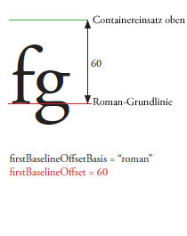
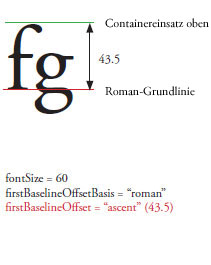
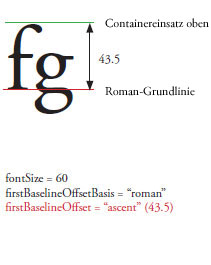

| Paket | fl.text |
| Klasse | public class TLFTextField |
| Vererbung | TLFTextField |
| Sprachversion: | ActionScript 3.0 |
| Produktversion: | Flash CS5 |
| Laufzeitversionen: | Flash Player 10, AIR 1.5 |
Erstellen Sie ein TLFTextField-Objekt auf die gleiche Weise wie Sie ein Textfeld mit der TextField-Klasse erstellen. Verwenden Sie dann die textFlow-Eigenschaft, um erweiterte Formatierung aus den TLF-Klassen zuzuweisen. Beispiel:
import fl.text.TLFTextField; import flashx.textLayout.formats.TextLayoutFormat; import flashx.textLayout.elements.TextFlow; var myTLFTextField:TLFTextField = new TLFTextField(); addChild(myTLFTextField); myTLFTextField.x = 10; myTLFTextField.y = 10; myTLFTextField.width = 200 myTLFTextField.height = 100; myTLFTextField.text = "This is my text"; var myFormat:TextLayoutFormat = new TextLayoutFormat(); myFormat.textIndent = 8; myFormat.color = 0x336633; myFormat.fontFamily = "Arial, Helvetica, _sans"; myFormat.fontSize = 24; var myTextFlow:TextFlow = myTLFTextField.textFlow; myTextFlow.hostFormat = myFormat; myTextFlow.flowComposer.updateAllControllers();
Verwandte API-Elemente
 Vererbte öffentliche Eigenschaften ausblenden
Vererbte öffentliche Eigenschaften ausblenden Vererbte öffentliche Eigenschaften anzeigen
Vererbte öffentliche Eigenschaften anzeigen| Eigenschaft | Definiert von | ||
|---|---|---|---|
 | accessibilityImplementation : AccessibilityImplementation
Die aktuelle Eingabehilfenimplementierung (AccessibilityImplementation) für diese InteractiveObject-Instanz. | InteractiveObject | |
| accessibilityProperties : AccessibilityProperties
Die aktuellen Optionen für Eingabehilfen zur Barrierefreiheit dieses Anzeigeobjekts. | DisplayObject | |
| alpha : Number
Gibt den Alphatransparenzwert des angegebenen Objekts an. | DisplayObject | |
| alwaysShowSelection : Boolean
Wenn sich das Textfeld bei der Einstellung „true“ nicht im Fokus befindet, markiert Flash Player die Auswahl im Textfeld in Hellblau. | TLFTextField | ||
| antiAliasType : String
Der für dieses Textfeld verwendete Anti-Aliasing-Typ. | TLFTextField | ||
| autoSize : String
Steuert die automatische Größenänderung und Ausrichtung von Textfeldern. | TLFTextField | ||
| background : Boolean
Gibt an, ob das Textfeld einen gefüllten Hintergrund aufweist. | TLFTextField | ||
| backgroundAlpha : Number
Legt den Alpha-Wert des Textfeldhintergrunds fest. | TLFTextField | ||
| backgroundColor : uint
Gibt die Hintergrundfarbe des Textfelds an. | TLFTextField | ||
| blendMode : String
Ein Wert aus der BlendMode-Klasse, mit dem angegeben wird, welcher Mischmodus verwendet werden soll. | DisplayObject | |
| blendShader : Shader [Nur Schreiben]
Legt einen Shader fest, der für das Mischen von Vordergrund und Hintergrund verwendet wird. | DisplayObject | |
| blockProgression : Object
Gibt eine vertikale oder horizontale Abfolge der Zeilenplatzierung an. | TLFTextField | ||
| border : Boolean
Gibt an, ob das Textfeld umrahmt ist. | TLFTextField | ||
| borderAlpha : Number
Legt den Alpha-Wert des Rahmens fest. | TLFTextField | ||
| borderColor : uint
Gibt die Farbe des Textfeldrahmens an. | TLFTextField | ||
| borderWidth : Number
Legt die Breite des Rahmens fest. | TLFTextField | ||
| bottomScrollV : int [schreibgeschützt]
Eine Ganzzahl (Index mit Basis 1), die die unterste der im angegebenen Textfeld sichtbaren Zeilen angibt. | TLFTextField | ||
| buttonMode : Boolean
Legt den Schaltflächenmodus für dieses Sprite fest. | Sprite | |
| cacheAsBitmap : Boolean
Wird diese Eigenschaft auf „true“ gesetzt, speichern Flash-Laufzeitumgebungen eine interne Bitmap-Darstellung des Anzeigeobjekts im Cache. | DisplayObject | |
| cacheAsBitmapMatrix : Matrix
Bei einem Nicht-Null-Wert definiert dieses Matrix-Objekt, wie ein Anzeigeobjekt dargestellt wird, wenn cacheAsBitmap auf „true“ gesetzt ist. | DisplayObject | |
| caretIndex : int [schreibgeschützt]
Der Index der Position der Einfügemarke. | TLFTextField | ||
| columnCount : Object
Anzahl der Textspalten (übernimmt Standardwert, wenn während der Kaskade nicht definiert). | TLFTextField | ||
| columnGap : Object
Gibt den Zwischenraum in Pixeln an, der zwischen den Spalten gelassen werden soll (übernimmt Standardwert, wenn während der Kaskade nicht definiert). | TLFTextField | ||
| columnWidth : Object
Spaltenbreite in Pixeln (übernimmt Standardwert, wenn während der Kaskade nicht definiert). | TLFTextField | ||
| condenseWhite : Boolean
Ein boolescher Wert, der angibt, ob zusätzliche Leerräume (beispielsweise Leerzeichen oder Zeilenumbrüche) aus einem Textfeld mit HTML-Text oder TLF-Markup entfernt werden sollen. | TLFTextField | ||
| constructor : Object
Ein Verweis auf das Klassenobjekt oder die Konstruktorfunktion für eine angegebene Objektinstanz. | Object | |
| contextMenu : NativeMenu
Gibt das diesem Objekt zugeordnete Kontextmenü an. | InteractiveObject | |
| defaultTextFormat : flash.text:TextFormat
Legt das Format fest, das auf neu eingefügten Text (z. B. von einem Benutzer eingegebener Text oder Text, der mit der replaceSelectedText()-Methode eingefügt wird) angewendet wird. | TLFTextField | ||
| direction : String
Gibt die standardmäßige bidirektionale Einbettungsstufe des Texts im Textblock an. | TLFTextField | ||
| displayAsPassword : Boolean
Gibt an, ob es sich um ein Kennworttextfeld handelt. | TLFTextField | ||
| doubleClickEnabled : Boolean
Gibt an, ob das Objekt doubleClick-Ereignisse empfängt. | InteractiveObject | |
| dropTarget : DisplayObject [schreibgeschützt]
Gibt das Anzeigeobjekt an, über das der Sprite gezogen wird oder auf dem der Sprite abgelegt wurde. | Sprite | |
| embedFonts : Boolean
Gibt an, ob bei der Wiedergabe eingebettete Schriftkonturen verwendet werden sollen. | TLFTextField | ||
| filters : Array
Ein indiziertes Array, das alle dem Anzeigeobjekt derzeit zugeordneten filter-Objekte enthält. | DisplayObject | |
| firstBaselineOffset : Object
Gibt die Grundlinienposition der ersten Linie im Container an. | TLFTextField | ||
| focusRect : Object
Gibt an, ob für dieses Objekt ein Fokusrechteck angezeigt wird. | InteractiveObject | |
| graphics : Graphics [schreibgeschützt]
Legt das Graphics-Objekt fest, das zu diesem Sprite gehört und für das Vektorzeichnungsbefehle zulässig sind. | Sprite | |
| gridFitType : String
Die für dieses Textfeld verwendete Art der Rasteranpassung. | TLFTextField | ||
| height : Number
Gibt die Höhe des Anzeigeobjekts in Pixeln an. | DisplayObject | |
| hitArea : Sprite
Gibt als Kollisionsbereich für ein Sprite ein anderes Sprite an. | Sprite | |
| htmlText : String
Enthält die HTML-Darstellung des Inhalts des Textfelds. | TLFTextField | ||
| length : int [schreibgeschützt]
Die Anzahl der Zeichen in einem Textfeld. | TLFTextField | ||
| loaderInfo : LoaderInfo [schreibgeschützt]
Gibt ein LoaderInfo-Objekt mit Informationen zum Laden der Datei zurück, zu der dieses Anzeigeobjekt gehört. | DisplayObject | |
| mask : DisplayObject
Das aufrufende Anzeigeobjekt wird durch das angegebene mask-Objekt maskiert. | DisplayObject | |
| maxChars : int
Die von einem Benutzer festgelegte maximale Anzahl von Zeichen, die das Textfeld enthalten kann. | TLFTextField | ||
| maxScrollH : int [schreibgeschützt]
Der maximale Wert der Eigenschaft „scrollH“. | TLFTextField | ||
| maxScrollV : int [schreibgeschützt]
Der maximale Wert der Eigenschaft „scrollV“. | TLFTextField | ||
| metaData : Object
Bezieht das Metadatenobjekt der DisplayObject-Instanz, wenn Metadaten neben der Instanz dieses DisplayObject in der SWF-Datei durch ein PlaceObject4-Tag gespeichert wurden. | DisplayObject | |
| mouseChildren : Boolean
Bestimmt, ob die untergeordneten Elemente des Objekts maus- oder benutzereingabegerätfähig sind oder nicht. | DisplayObjectContainer | |
| mouseEnabled : Boolean
Gibt an, ob dieses Objekt Meldungen von der Maus oder einem anderen Benutzereingabegerät empfängt. | InteractiveObject | |
| mouseWheelEnabled : Boolean
Ein boolescher Wert, der angibt, ob Flash Player für mehrzeilige Textfelder automatisch einen Bildlauf durchführt, wenn der Benutzer ein Textfeld anklickt und das Mausrad dreht. | TLFTextField | ||
| mouseX : Number [schreibgeschützt]
Gibt die x-Koordinate der Position der Maus oder des Benutzereingabegeräts in Pixeln an. | DisplayObject | |
| mouseY : Number [schreibgeschützt]
Gibt die y-Koordinate der Position der Maus oder des Benutzereingabegeräts in Pixeln an. | DisplayObject | |
| multiline : Boolean
Gibt an, ob es sich um ein mehrzeiliges Textfeld handelt. | TLFTextField | ||
| name : String
Gibt den Instanznamen des Anzeigeobjekts an. | DisplayObject | |
| needsSoftKeyboard : Boolean
Gibt an, ob eine virtuelle Tastatur (Bildschirmtastatur) angezeigt wird, wenn diese InteractiveObject-Instanz den Fokus erhält. | InteractiveObject | |
| numChildren : int [schreibgeschützt]
Liefert die Anzahl der Objekte, die diesem Objekt untergeordnet sind. | DisplayObjectContainer | |
| numLines : int [schreibgeschützt]
Gibt die Anzahl der Textzeilen in einem mehrzeiligen Textfeld an. | TLFTextField | ||
| opaqueBackground : Object
Legt fest, ob das Anzeigeobjekt bei einer bestimmten Hintergrundfarbe undurchsichtig ist. | DisplayObject | |
| paddingBottom : Object
Unterer Versatz in Pixeln (übernimmt Standardwert, wenn während der Kaskade nicht definiert). | TLFTextField | ||
| paddingLeft : Object
Linker Einzug in Pixeln (übernimmt Standardwert, wenn während der Kaskade nicht definiert). | TLFTextField | ||
| paddingRight : Object
Rechter Einzug in Pixeln (übernimmt Standardwert, wenn während der Kaskade nicht definiert). | TLFTextField | ||
| paddingTop : Object
Oberer Versatz in Pixeln (übernimmt Standardwert, wenn während der Kaskade nicht definiert). | TLFTextField | ||
| parent : DisplayObjectContainer [schreibgeschützt]
Gibt das DisplayObjectContainer-Objekt an, das dieses Anzeigeobjekt enthält. | DisplayObject | |
| pixelMaxScrollV : int [schreibgeschützt]
Der maximale Wert von pixelScrollV. | TLFTextField | ||
| pixelScrollV : int
Die vertikale Position von Text in einem Textfeld, angegeben in Pixel, anders als bei scrollV, was zeilenbasiert ist. | TLFTextField | ||
| restrict : String
Gibt die Zeichen an, die ein Benutzer in das Textfeld eingeben kann. | TLFTextField | ||
| root : DisplayObject [schreibgeschützt]
Bei einem Anzeigeobjekt in einer geladenen SWF-Datei ist die root-Eigenschaft das oberste Anzeigeobjekt in dem Teil der Baumstruktur der Anzeigeliste, der diese SWF-Datei repräsentiert. | DisplayObject | |
| rotation : Number
Gibt die Drehung der DisplayObject-Instanz ausgehend von der ursprünglichen Ausrichtung in Grad an. | DisplayObject | |
| rotationX : Number
Gibt die x-Achsendrehung der DisplayObject-Instanz in Grad an, und zwar bezogen auf die ursprüngliche Ausrichtung zum übergeordneten 3D-Container. | DisplayObject | |
| rotationY : Number
Gibt die y-Achsendrehung der DisplayObject-Instanz in Grad an, und zwar bezogen auf die ursprüngliche Ausrichtung zum übergeordneten 3D-Container. | DisplayObject | |
| rotationZ : Number
Gibt die Drehung der z-Achse der DisplayObject-Instanz in Grad an, ausgehend von ihrer ursprünglichen Ausrichtung relativ zum übergeordneten 3D-Container. | DisplayObject | |
| scale9Grid : Rectangle
Das aktuell verwendete Skalierungsraster. | DisplayObject | |
| scaleX : Number
Gibt die horizontale Skalierung (Prozentwert) des Objekts ausgehend vom Registrierungspunkt an. | DisplayObject | |
| scaleY : Number
Gibt die vertikale Skalierung (Prozentwert) eines Objekts ausgehend vom Registrierungspunkt an. | DisplayObject | |
| scaleZ : Number
Gibt die Tiefenskalierung (Prozentwert) eines Objekts ausgehend vom Registrierungspunkt an. | DisplayObject | |
| scrollH : int
Die aktuelle horizontale Bildlaufposition. | TLFTextField | ||
| scrollRect : Rectangle
Die Begrenzungen des Bildlaufrechtecks für das Anzeigeobjekt. | DisplayObject | |
| scrollV : int
Die vertikale Textposition in einem Textfeld. | TLFTextField | ||
| selectable : Boolean
Ein boolescher Wert, der angibt, ob das Textfeld ausgewählt werden kann. | TLFTextField | ||
| selectionBeginIndex : int [schreibgeschützt]
Der auf null basierende Zeichenindexwert des ersten Zeichens in der aktuellen Auswahl. | TLFTextField | ||
| selectionEndIndex : int [schreibgeschützt]
Der auf null basierende Indexwert des letzten Zeichens in der aktuellen Auswahl. | TLFTextField | ||
| sharpness : Number
Bildschärfe ist auf TLF-Textfelder nicht anwendbar. | TLFTextField | ||
| softKeyboard : String
Steuert das Erscheinungsbild der Bildschirmtastatur. | InteractiveObject | |
| softKeyboardInputAreaOfInterest : Rectangle
Definiert einen Bereich, der auf dem Bildschirm sichtbar bleiben soll, wenn eine virtuelle Tastatur angezeigt wird (nicht unter iOS verfügbar). | InteractiveObject | |
| soundTransform : flash.media:SoundTransform
Steuert den Sound innerhalb dieses Sprites. | Sprite | |
| stage : Stage [schreibgeschützt]
Die Bühne des Anzeigeobjekts. | DisplayObject | |
| styleSheet : StyleSheet
Stylesheets für TLF-TextField. | TLFTextField | ||
| tabChildren : Boolean
Bestimmt, ob die dem Objekt untergeordneten Objekte per Tabulatortaste aktivierbar sind. | DisplayObjectContainer | |
| tabEnabled : Boolean
Gibt an, ob sich dieses Objekt in der Tabulatorreihenfolge befindet. | InteractiveObject | |
| tabIndex : int
Gibt die Tabulatorreihenfolge von Objekten in einer SWF-Datei an. | InteractiveObject | |
| text : String
Ein String, bei dem es sich um den aktuellen Text im Textfeld handelt. | TLFTextField | ||
| textColor : uint
Die Farbe des Textes in einem Textfeld (im Hexadezimalformat). | TLFTextField | ||
| textFlow : flashx.textLayout.elements:TextFlow
Verwenden Sie diese Eigenschaft, um Formatierung aus den TLF-Klassen in den flashx-Paketen auf die TLFTextField-Instanz anzuwenden. | TLFTextField | ||
| textHeight : Number [schreibgeschützt]
Die Höhe des Texts in Pixel. | TLFTextField | ||
| textSnapshot : flash.text:TextSnapshot [schreibgeschützt]
Liefert ein TextSnapshot-Objekt für diese DisplayObjectContainer-Instanz. | DisplayObjectContainer | |
| textWidth : Number [schreibgeschützt]
Die Breite des Texts in Pixel. | TLFTextField | ||
| thickness : Number
Die thickness-Eigenschaft wird auf das TLF-Textfeld nicht angewendet. | TLFTextField | ||
| tlfMarkup : String
Legt das TLF-Markup des Texts im TLF-Textfeld fest bzw. ruft dieses ab. | TLFTextField | ||
| transform : flash.geom:Transform
Ein Objekt mit Eigenschaften, die zur Matrix, Farbtransformation und Pixelbegrenzung eines Anzeigeobjekts gehören. | DisplayObject | |
| type : String
Der Typ des Textfelds. | TLFTextField | ||
| useHandCursor : Boolean
Ein boolescher Wert, der angibt, ob der Handcursor angezeigt werden soll, wenn der Zeiger über ein Sprite geführt wird, in dem die buttonMode-Eigenschaft auf „true“ gesetzt ist. | Sprite | |
| useRichTextClipboard : Boolean
Gibt an, ob die Textformatierung mit dem Text in die Zwischenablage kopiert werden soll. | TLFTextField | ||
| verticalAlign : String
Vertikale Ausrichtung oder Blocksatz (übernimmt Standardwert, wenn während der Kaskade nicht definiert). | TLFTextField | ||
| visible : Boolean
Gibt an, ob das Anzeigeobjekt sichtbar ist oder nicht. | DisplayObject | |
| width : Number
Gibt die Breite des Anzeigeobjekts in Pixeln an. | DisplayObject | |
| wordWrap : Boolean
Ein boolescher Wert, der angibt, ob im Textfeld ein Zeilenumbruch durchgeführt wird. | TLFTextField | ||
| x : Number
Gibt die x-Koordinate der DisplayObject-Instanz relativ zu den lokalen Koordinaten des übergeordneten DisplayObjectContainer-Objekts an. | DisplayObject | |
| y : Number
Gibt die y-Koordinate der DisplayObject-Instanz relativ zu den lokalen Koordinaten des übergeordneten DisplayObjectContainer-Objekts an. | DisplayObject | |
| z : Number
Gibt die z-Koordinatenposition an der z-Achse der DisplayObject-Instanz relativ zum übergeordneten 3D-Container an. | DisplayObject | |
| Methode | Definiert von | ||
|---|---|---|---|
Konstruktor für TLFTextField-Objekte. | TLFTextField | ||
|
Fügt dieser DisplayObjectContainer-Instanz eine untergeordnete DisplayObject-Instanz hinzu. | DisplayObjectContainer | |
|
Fügt dieser DisplayObjectContainer-Instanz eine untergeordnete DisplayObject-Instanz hinzu. | DisplayObjectContainer | |
| addEventListener(type:String, listener:Function, useCapture:Boolean = false, priority:int = 0, useWeakReference:Boolean = false):void
Registriert ein Ereignis-Listener-Objekt bei einem EventDispatcher-Objekt, sodass der Listener über ein Ereignis benachrichtigt wird. | EventDispatcher | |
Hängt den vom Parameter „newText“ angegebenen String an das Ende des Texts im Textfeld an. | TLFTextField | ||
|
Gibt an, ob aufgrund der Sicherheitseinschränkungen irgendwelche Anzeigeobjekte aus der Liste ausgeschlossen werden, die beim Aufrufen der DisplayObjectContainer.getObjectsUnderPoint()-Methode mit dem angegebenen point-Punkt zurückgegeben wird. | DisplayObjectContainer | |
|
Ermittelt, ob das angegebene Anzeigeobjekt der DisplayObjectContainer-Instanz oder der Instanz selbst untergeordnet ist. | DisplayObjectContainer | |
|
Sendet ein Ereignis in den Ereignisablauf. | EventDispatcher | |
|
Gibt ein Rechteck zurück, das den Bereich des Anzeigeobjekts in Bezug auf das Koordinatensystem des targetCoordinateSpace-Objekts definiert. | DisplayObject | |
Gibt ein Rechteck zurück, das die Begrenzungsbox für das Zeichen darstellt. | TLFTextField | ||
Gibt den auf null basierenden Indexwert des Zeichens an dem von den Parametern x und y angegebenen Punkt zurück. | TLFTextField | ||
|
Gibt die untergeordnete Anzeigeobjektinstanz zurück, die sich an der angegebenen Indexposition befindet. | DisplayObjectContainer | |
|
Gibt das untergeordnete Anzeigeobjekt für den angegebenen Namen zurück. | DisplayObjectContainer | |
|
Gibt die Indexposition einer untergeordneten DisplayObject-Instanz zurück. | DisplayObjectContainer | |
Gibt anhand eines Zeichenindex den Index des ersten Zeichens im gleichen Absatz zurück. | TLFTextField | ||
Gibt einen DisplayObject-Verweis für die jeweilige ID, ein Bild oder eine SWF-Datei zurück, die bzw. das einem HTML-formatierten Textfeld über ein <img>-Tag hinzugefügt wurde. | TLFTextField | ||
Gibt den auf null basierenden Indexwert des Zeichens an dem von den Parametern x und y angegebenen Punkt zurück. | TLFTextField | ||
Gibt den auf null basierenden Indexwert der Zeile zurück, die das vom Parameter „charIndex“ angegebene Zeichen enthält. | TLFTextField | ||
Gibt die Zeichenanzahl in einer bestimmten Textzeile zurück. | TLFTextField | ||
Gibt metrische Informationen zu einer bestimmten Textzeile zurück. | TLFTextField | ||
Gibt den Zeichenindex des ersten Zeichens in der vom Parameter „lineIndex“ angegebenen Zeile zurück. | TLFTextField | ||
Gibt den Text der durch den Parameter „lineIndex“ angegebenen Zeile zurück. | TLFTextField | ||
|
Gibt ein Array an Objekten zurück, die unter dem angegebenen Punkt liegen und dieser DisplayObjectContainer-Instanz untergeordnet sind (auch über mehrere Unterordnungsstufen hinweg). | DisplayObjectContainer | |
Gibt anhand eines Zeichenindex die Länge des Absatzes mit dem angegebenen Zeichen zurück. | TLFTextField | ||
|
Gibt ein Rechteck zurück, das die Begrenzung des Anzeigeobjekts (ohne etwaige Striche oder Formen) definiert, und zwar aufgrund des vom Parameter „targetCoordinateSpace“ definierten Koordinatensystems. | DisplayObject | |
Gibt ein TextFormat-Objekt mit Formatierungsinformationen für den durch die Parameter „beginIndex“ und „endIndex“ angegebenen Textbereich zurück. | TLFTextField | ||
|
Konvertiert das point-Objekt von den (globalen) Bühnenkoordinaten in die (lokalen) Koordinaten des Anzeigeobjekts. | DisplayObject | |
|
Konvertiert einen zweidimensionale Punkt von den (globalen) Bühnenkoordinaten in die dreidimensionalen (lokalen) Koordinaten des Anzeigeobjekts. | DisplayObject | |
|
Überprüft, ob das EventDispatcher-Objekt Listener für einen bestimmten Ereignistyp registriert hat. | EventDispatcher | |
|
Gibt an, ob für ein Objekt eine bestimmte Eigenschaft definiert wurde. | Object | |
|
Untersucht den Begrenzungsrahmen des Anzeigeobjekts, um festzustellen, ob er sich mit dem Begrenzungsrahmen des obj-Anzeigeobjekts überschneidet. | DisplayObject | |
|
Wertet das Anzeigeobjekt aus, um festzustellen, ob es den durch die Parameter „x“ und „y“ festgelegten Punkt überdeckt oder schneidet. | DisplayObject | |
Gibt „true“ zurück, wenn eine eingebettete Schriftart mit dem angegebenen fontName und fontStyle verfügbar ist, wobei Font.fontType gleich flash.text.FontType.EMBEDDED_CFF ist. | TLFTextField | ||
|
Gibt an, ob eine Instanz der Object-Klasse in der Prototypkette des Objekts vorhanden ist, das als Parameter angegeben wurde. | Object | |
|
Konvertiert einen dreidimensionalen Punkt der dreidimensionalen (lokalen) Koordinaten des Anzeigeobjekts in einen zweidimensionalen Punkt der (globalen) Bühnenkoordinaten. | DisplayObject | |
|
Konvertiert das point-Objekt von den (lokalen) Koordinaten des Anzeigeobjekts in die (globalen) Bühnenkoordinaten. | DisplayObject | |
|
Gibt an, ob die angegebene Eigenschaft vorhanden ist und durchlaufen werden kann. | Object | |
|
Entfernt die angegebene untergeordnete DisplayObject-Instanz aus der Child-Liste der DisplayObjectContainer-Instanz. | DisplayObjectContainer | |
|
Entfernt ein untergeordnetes Anzeigeobjekt aus der angegebenen Indexposition in der Child-Liste des Anzeigeobjekt-Containers. | DisplayObjectContainer | |
|
Entfernt alle untergeordneten DisplayObject-Instanzen aus der Liste der untergeordneten Elemente der DisplayObjectContainer-Instanz. | DisplayObjectContainer | |
|
Entfernt einen Listener aus dem EventDispatcher-Objekt. | EventDispatcher | |
Ersetzt die aktuelle Auswahl durch den Inhalt des Parameters „value“. | TLFTextField | ||
Ersetzt den Zeichenbereich, der durch die Parameter „beginIndex“ und „endIndex“ angegeben wird, durch den Inhalt des Parameters „newText“. | TLFTextField | ||
|
Blendet eine virtuelle Tastatur ein. | InteractiveObject | |
|
Ändert die Position eines vorhandenen untergeordneten Objekts im Anzeigeobjekt-Container. | DisplayObjectContainer | |
|
Legt die Verfügbarkeit einer dynamischen Eigenschaft für Schleifenoperationen fest. | Object | |
Legt den durch die Indexwerte des ersten und letzten Zeichens (Parameter „beginIndex und „endIndex“) angegebenen Text als ausgewählt fest. | TLFTextField | ||
Weist dem angegebenen Text in einem Textfeld die mit dem Parameter „format“ angegebene Textformatierung zu. | TLFTextField | ||
|
Ermöglicht es Benutzern, das angegebene Sprite mit einer Ziehoperation zu verschieben. | Sprite | |
|
Ermöglicht dem Benutzer das Ziehen des angegebenen Sprites auf einem berührungsempfindlichen Gerät. | Sprite | |
|
Stoppt rekursiv die Ausführung von allen Movieclips, die auf diesem Objekt gerootet sind. | DisplayObjectContainer | |
|
Beendet die startDrag()-Methode. | Sprite | |
|
Beendet die startTouchDrag()-Methode zur Verwendung mit berührungsempfindlichen Geräten. | Sprite | |
|
Kehrt die z-Reihenfolge (von vorne nach hinten) der beiden angegebenen untergeordneten Objekte um. | DisplayObjectContainer | |
|
Kehrt die z-Reihenfolge (von vorne nach hinten) der untergeordneten Objekte an den beiden angegebenen Indexpositionen in der Child-Liste um. | DisplayObjectContainer | |
|
Gibt die Stringdarstellung dieses Objekts zurück, formatiert entsprechend den Konventionen des Gebietsschemas. | Object | |
|
Gibt das angegebene Objekt als String zurück. | Object | |
|
Gibt den Grundwert des angegebenen Objekts zurück. | Object | |
|
Überprüft, ob bei diesem EventDispatcher-Objekt oder bei einem seiner Vorgänger ein Ereignis-Listener für einen bestimmten Ereignistyp registriert ist. | EventDispatcher | |
| Ereignis | Übersicht | Definiert von | ||
|---|---|---|---|---|
| [broadcast event] Wird ausgelöst, wenn Flash Player oder eine AIR-Anwendung den Betriebssystemfokus erhält und aktiv wird. | EventDispatcher | ||
| Wird ausgelöst, wenn ein Objekt der Anzeigeliste hinzugefügt wird. | DisplayObject | ||
| Wird ausgelöst, wenn ein Anzeigeobjekt der Anzeigeliste für die Bühne hinzugefügt wird. Dies erfolgt entweder direkt oder über das Hinzufügen einer Unterstruktur, die das Anzeigeobjekt enthält. | DisplayObject | ||
| Wird ausgelöst, nachdem ein Steuerelementwert geändert wurde (im Gegensatz zum textInput-Ereignis, das ausgelöst wird, bevor der Wert geändert wird). | TLFTextField | |||
| Wird ausgelöst, wenn der Benutzer aus dem Kontextmenü die Option „Löschen“ wählt. | InteractiveObject | ||
| Wird ausgelöst, wenn ein Benutzer die Haupttaste des Zeigegeräts über derselben InteractiveObject-Instanz drückt und wieder loslässt. | InteractiveObject | ||
| Wird ausgelöst, wenn der Benutzer das Kontextmenü, das mit diesem interaktiven Objekt verknüpft ist, in einer AIR-Anwendung einblendet. | InteractiveObject | ||
| Wird abgesetzt, wenn der Benutzer die plattformspezifische Tastenkombination für „Kopieren“ aktiviert oder im Kontextmenü des Texts „Kopieren“ wählt. | InteractiveObject | ||
| Wird abgesetzt, wenn der Benutzer die plattformspezifische Tastenkombination für „Ausschneiden“ aktiviert oder im Kontextmenü des Texts „Ausschneiden“ wählt. | InteractiveObject | ||
| [broadcast event] Wird ausgelöst, wenn Flash Player- oder die AIR-Anwendung den Fokus verliert und inaktiv wird. | EventDispatcher | ||
| Wird ausgelöst, wenn der Benutzer die Haupttaste des Zeigegeräts zweimal schnell hintereinander über dem gleichen InteractiveObject-Objekt drückt und das doubleClickEnabled-Flag des Objekts „true“ lautet. | InteractiveObject | ||
| [broadcast event] Wird ausgelöst, wenn der Abspielkopf ein neues Bild erreicht. | DisplayObject | ||
| [broadcast event] Wird ausgelöst, wenn der Abspielkopf das aktuelle Bild verlässt. | DisplayObject | ||
| Wird ausgelöst, nachdem ein Anzeigeobjekt den Fokus erhalten hat. | InteractiveObject | ||
| Wird ausgelöst, nachdem ein Anzeigeobjekt den Fokus verloren hat. | InteractiveObject | ||
| [broadcast event] Wird ausgelöst, nachdem die Konstruktoren von Bildanzeigeobjekten ausgeführt wurden, bevor Bildskripten ausgeführt wurden. | DisplayObject | ||
| Wird abgesetzt, wenn der Benutzer einen Kontaktpunkt entlang der Kante der Touch-Oberfläche mit einer InteractiveObject-Instanz erstellt (z. B. durch Tippen entlang der Kante der Touch-Oberfläche auf Siri Remote für Apple TV). Bei einigen Geräten könnte dieser Kontakt auch als eine Kombination von verschiedenen Kontaktereignissen ausgelegt werden. | InteractiveObject | ||
| Wird abgesetzt, wenn der Benutzer auf zwei Kontaktpunkte über derselben InteractiveObject-Instanz auf einem berührungsempfindlichen Gerät drückt (zum Beispiel bei einem Mobiltelefon oder Tablet mit Touchscreen zwei Finger auf ein Anzeigeobjekt drückt und wieder loslässt). | InteractiveObject | ||
| Wird abgesetzt, wenn der Benutzer einen Berührungspunkt über die InteractiveObject-Instanz auf einem berührungsempfindlichen Gerät bewegt (zum Beispiel bei einem Mobiltelefon oder Tablet mit Touchscreen einen Finger über ein Anzeigeobjekt von links nach rechts bewegt). | InteractiveObject | ||
| Wird abgesetzt, wenn der Benutzer eine Drehgeste an einem Kontaktpunkt mit einer InteractiveObject-Instanz ausführt (zum Beispiel mit zwei Fingern den Bildschirm eines Mobiltelefons oder Tablets berührt und die Finger dann über einem Anzeigeobjekt dreht). | InteractiveObject | ||
| Wird abgesetzt, wenn der Benutzer eine Swipe-Geste an einem Kontaktpunkt mit einer InteractiveObject-Instanz ausführt (zum Beispiel mit drei Fingern den Bildschirm eines Mobiltelefons oder Tablets berührt und die Finger dann parallel über ein Anzeigeobjekt bewegt). | InteractiveObject | ||
| Wird abgesetzt, wenn der Benutzer einen Kontaktpunkt mit einer InteractiveObject-Instanz erstellt und dann auf ein berührungsempfindliches Gerät tippt (zum Beispiel bei einem Mobiltelefon oder Tablet mit Touchscreen mehrere Finger auf einem Anzeigeobjekt platziert, um ein Menü zu öffnen, und dann mit einem Finger tippt, um einen Menüpunkt auszuwählen). | InteractiveObject | ||
| Wird abgesetzt, wenn der Benutzer eine Zoom-Geste an einem Kontaktpunkt mit einer InteractiveObject-Instanz ausführt (zum Beispiel mit zwei Fingern den Bildschirm eines Mobiltelefons oder Tablets berührt und die Finger dann schnell über einem Anzeigeobjekt spreizt). | InteractiveObject | ||
| Dieses Ereignis wird an jede Client-Anwendung abgesetzt, die die Inline-Eingabe mit einem IME unterstützt | InteractiveObject | ||
| Wird ausgelöst, wenn der Benutzer eine Taste drückt. | InteractiveObject | ||
| Wird ausgelöst, wenn der Benutzer versucht, den Fokus mithilfe der Tastatur zu ändern. | InteractiveObject | ||
| Wird ausgelöst, wenn der Benutzer eine Taste loslässt. | InteractiveObject | ||
| Wird ausgelöst, wenn ein Benutzer auf einen Hyperlink in einem HTML-fähigen Textfeld klickt und die URL-Adresse mit „event:“ beginnt. | TLFTextField | |||
| Wird ausgelöst, wenn der Benutzer die mittlere Taste des Zeigegeräts über derselben InteractiveObject-Instanz drückt und loslässt. | InteractiveObject | ||
| Wird ausgelöst, wenn der Benutzer die mittlere Taste des Zeigegeräts über einer InteractiveObject-Instanz drückt. | InteractiveObject | ||
| Wird ausgelöst, wenn der Benutzer die Taste des Zeigegeräts über einer InteractiveObject-Instanz loslässt. | InteractiveObject | ||
| Wird ausgelöst, wenn der Benutzer die Taste des Zeigegeräts über einer InteractiveObject-Instanz drückt. | InteractiveObject | ||
| Wird ausgelöst, wenn der Benutzer versucht, den Fokus mithilfe eines Zeigegeräts zu ändern. | InteractiveObject | ||
| Wird ausgelöst, wenn der Benutzer das Zeigegerät bewegt, während es sich auf einer InteractiveObject-Instanz befindet. | InteractiveObject | ||
| Wird ausgelöst, wenn der Benutzer das Zeigegerät von einer InteractiveObject-Instanz wegbewegt. | InteractiveObject | ||
| Wird ausgelöst, wenn der Benutzer das Zeigegerät auf eine InteractiveObject-Instanz bewegt. | InteractiveObject | ||
| Wird ausgelöst, wenn der Benutzer die Taste des Zeigegeräts über einer InteractiveObject-Instanz loslässt. | InteractiveObject | ||
| Wird ausgelöst, wenn das Mausrad über einer InteractiveObject-Instanz gedreht wird. | InteractiveObject | ||
| Wird vom InteractiveObject-Ziehinitiator ausgelöst, wenn der Benutzer die Ziehbewegung beendet. | InteractiveObject | ||
| Wird vom InteractiveObject-Zielobjekt ausgelöst, wenn ein gezogenes Objekt darauf abgelegt wird und das Ablegen mit einem Aufruf von „DragManager.acceptDragDrop()“ akzeptiert wurde. | InteractiveObject | ||
| Wird von einer InteractiveObject-Instanz ausgelöst, wenn eine Ziehbewegung in ihre Begrenzungen eintritt. | InteractiveObject | ||
| Wird von einer InteractiveObject-Instanz ausgelöst, wenn eine Ziehbewegung ihre Begrenzungen verlässt. | InteractiveObject | ||
| Wird von einer InteractiveObject-Instanz kontinuierlich ausgelöst, während eine Ziehbewegung innerhalb ihrer Begrenzungen verbleibt. | InteractiveObject | ||
| Wird am Anfang eines Ziehvorgangs von der InteractiveObject-Instanz ausgelöst, die als Ziehinitiator im DragManager.doDrag()-Aufruf festgelegt ist. | InteractiveObject | ||
| Wird während eines Ziehvorgangs von der InteractiveObject-Instanz ausgelöst, die als Ziehinitiator im DragManager.doDrag()-Aufruf festgelegt ist. | InteractiveObject | ||
| Wird abgesetzt, wenn der Benutzer die plattformspezifische Tastenkombination für „Einfügen“ aktiviert oder im Kontextmenü des Texts „Einfügen“ wählt. | InteractiveObject | ||
| Wird abgesetzt, wenn der Benutzer einen aktiven Eingabestift unter den Schwellenwert für die Abstandserkennung des Bildschirms senkt. | InteractiveObject | ||
| Wird abgesetzt, wenn der Benutzer einen aktiven Eingabestift über den Schwellenwert für die Abstandserkennung des Bildschirms anhebt. | InteractiveObject | ||
| Wird abgesetzt, wenn der Benutzer den aktiven Eingabestift über den Bildschirm bewegt, während er innerhalb des Schwellenwerts der Abstandserkennung bleibt. | InteractiveObject | ||
| Wird abgesetzt, wenn der Benutzer den aktiven Eingabestift von diesem InteractiveObject wegbewegt, während er innerhalb des Schwellenwerts der Abstandserkennung auf dem Bildschirm bleibt. | InteractiveObject | ||
| Wird abgesetzt, wenn der Benutzer den aktiven Eingabestift direkt über dieses InteractiveObject bewegt, während er innerhalb des Schwellenwerts der Abstandserkennung auf dem Bildschirm bleibt. | InteractiveObject | ||
| Wird abgesetzt, wenn der Benutzer einen aktiven Eingabestift von diesem InteractiveObject und seinen untergeordneten Elementen wegbewegt, während er innerhalb des Schwellenwerts der Abstandserkennung auf dem Bildschirm bleibt. | InteractiveObject | ||
| Wird abgesetzt, wenn der Benutzer einen aktiven Eingabestift von außerhalb der Nachfolgerstruktur des Objekts in der Anzeigeliste über dieses InteractiveObject bewegt (und dabei innerhalb des Schwellenwerts für die Abstandserkennung auf dem Bildschirm bleibt). | InteractiveObject | ||
| Wird abgesetzt, wenn ein Benutzer die Taste des Zeigegeräts loslässt, nachdem er die Taste über einer InteractiveObject-Instanz gedrückt und das Zeigegerät dann von der InteractiveObject-Instanz wegbewegt hat. | InteractiveObject | ||
| Wird ausgelöst, wenn ein Objekt aus der Anzeigeliste entfernt werden soll. | DisplayObject | ||
| Wird ausgelöst, wenn ein Anzeigeobjekt aus der Anzeigeliste entfernt werden soll. Dies erfolgt entweder direkt oder über das Entfernen einer Unterstruktur, die das Anzeigeobjekt enthält. | DisplayObject | ||
| [broadcast event] Wird ausgelöst, wenn die Anzeigeliste kurz davor steht, aktualisiert und neu gezeichnet zu werden. | DisplayObject | ||
| Wird ausgelöst, wenn der Benutzer die rechte Taste des Zeigegeräts über derselben InteractiveObject-Instanz drückt und loslässt. | InteractiveObject | ||
| Wird ausgelöst, wenn der Benutzer die Taste des Zeigegeräts über einer InteractiveObject-Instanz drückt. | InteractiveObject | ||
| Wird ausgelöst, wenn der Benutzer die Taste des Zeigegeräts über einer InteractiveObject-Instanz loslässt. | InteractiveObject | ||
| Wird ausgelöst, wenn der Benutzer das Zeigegerät von einer InteractiveObject-Instanz wegbewegt. | InteractiveObject | ||
| Wird ausgelöst, wenn der Benutzer das Zeigegerät auf eine InteractiveObject-Instanz bewegt. | InteractiveObject | ||
| Von einem TextField-Objekt ausgelöst, nachdem der Benutzer einen Bildlauf durchgeführt hat. | TLFTextField | |||
| Wird abgesetzt, wenn der Benutzer die plattformspezifische Tastenkombination für „Alles auswählen“ aktiviert oder im Kontextmenü des Texts „Alles auswählen“ wählt. | InteractiveObject | ||
| Wird sofort nach dem Einblenden der Softwaretastatur abgesetzt. | InteractiveObject | ||
| Wird direkt vor dem Einblenden der Softwaretastatur abgesetzt. | InteractiveObject | ||
| Wird sofort nach dem Ausblenden der Softwaretastatur abgesetzt. | InteractiveObject | ||
| Wird ausgelöst, wenn sich der Wert des tabChildren-Flags des Objekts ändert. | InteractiveObject | ||
| Wird ausgelöst, wenn sich das tabEnabled-Flag des Objekts ändert. | InteractiveObject | ||
| Wird ausgelöst, wenn sich der Wert der tabIndex-Eigenschaft des Objekts ändert. | InteractiveObject | ||
| Flash Player löst das textInput-Ereignis aus, wenn ein Benutzer ein oder mehr Textzeichen eingibt. | TLFTextField | |||
| Wird abgesetzt, wenn der Benutzer ein berührungsempfindliches Gerät erstmals berührt (zum Beispiel mit dem Finger das Touchscreen eines Mobiltelefons oder Tablets berührt). | InteractiveObject | ||
| Wird abgesetzt, wenn der Benutzer den Kontaktpunkt bei einem berührungsempfindlichen Gerät entfernt (zum Beispiel den Finger vom Touchscreen eines Mobiltelefons oder Tablets hebt). | InteractiveObject | ||
| Wird abgesetzt, wenn der Benutzer das Gerät berührt, und zwar kontinuierlich, bis der Kontaktpunkt entfernt wird. | InteractiveObject | ||
| Wird abgesetzt, wenn der Benutzer den Kontaktpunkt bei einem berührungsempfindlichen Gerät von einer InteractiveObject-Instanz wegbewegt (zum Beispiel bei einem Mobiltelefon oder Tablet mit Touchscreen einen Finger von einem Anzeigeobjekt zu einem anderen zieht). | InteractiveObject | ||
| Wird abgesetzt, wenn der Benutzer den Kontaktpunkt bei einem berührungsempfindlichen Gerät über eine InteractiveObject-Instanz bewegt (zum Beispiel bei einem Mobiltelefon oder Tablet mit Touchscreen einen Finger von einem Punkt außerhalb des Anzeigeobjekts auf einen Punkt über einem Anzeigeobjekt zieht). | InteractiveObject | ||
| Wird abgesetzt, wenn der Benutzer den Kontaktpunkt bei einem berührungsempfindlichen Gerät von einer InteractiveObject-Instanz wegbewegt (zum Beispiel bei einem Mobiltelefon oder Tablet mit Touchscreen einen Finger von einem Anzeigeobjekt auf einen Punkt außerhalb des Anzeigeobjekts zieht). | InteractiveObject | ||
| Wird abgesetzt, wenn der Benutzer den Kontaktpunkt bei einem berührungsempfindlichen Gerät über eine InteractiveObject-Instanz bewegt (zum Beispiel bei einem Mobiltelefon oder Tablet mit Touchscreen einen Finger von einem Punkt außerhalb des Anzeigeobjekts auf einen Punkt über einem Anzeigeobjekt zieht). | InteractiveObject | ||
| Wird abgesetzt, wenn der Benutzer den Kontaktpunkt über derselben InteractiveObject-Instanz anhebt, auf der der Kontakt eingeleitet wurde (zum Beispiel bei einem Mobiltelefon oder Tablet mit Touchscreen einen Finger von einem einzelnen Kontaktpunkt hebt). | InteractiveObject | ||
alwaysShowSelection | Eigenschaft |
alwaysShowSelection:Boolean| Sprachversion: | ActionScript 3.0 |
| Laufzeitversionen: | Flash Player 10, AIR 1.5 |
Wenn sich das Textfeld bei der Einstellung true nicht im Fokus befindet, markiert Flash Player die Auswahl im Textfeld in Hellblau. Wenn sich das Textfeld bei Einstellung false nicht im Fokus befindet, markiert Flash Player die Auswahl im Textfeld nicht.
Beispiel:
package
{
import flash.display.Sprite;
import fl.text.TLFTextField;
import flash.text.TextFieldType;
public class TLFTextField_alwaysShowSelection extends Sprite
{
public function TLFTextField_alwaysShowSelection()
{
var label1:TLFTextField = createTLFTextField(0, 20, 200, 20);
label1.text = "This text is selected.";
label1.setSelection(0, 9);
label1.alwaysShowSelection = true;
var label2:TLFTextField = createTLFTextField(0, 50, 200, 20);
label2.text = "Drag to select some of this text.";
}
private function createTLFTextField(x:Number, y:Number, width:Number, height:Number):TLFTextField
{
var result:TLFTextField = new TLFTextField();
result.x = x;
result.y = y;
result.width = width;
result.height = height;
addChild(result);
return result;
}
}
}
Der Standardwert ist false.
Implementierung
public function get alwaysShowSelection():Boolean public function set alwaysShowSelection(value:Boolean):voidVerwandte API-Elemente
antiAliasType | Eigenschaft |
antiAliasType:String| Sprachversion: | ActionScript 3.0 |
| Laufzeitversionen: | Flash Player 10, AIR 1.5 |
Der für dieses Textfeld verwendete Anti-Aliasing-Typ. Verwenden Sie flash.text.AntiAliasType-Konstanten für diese Eigenschaft. Sie können diese Einstellung nur dann steuern, wenn die Schriftart eingebettet ist (die Eigenschaft embedFonts ist auf true gesetzt).
Wenn Sie Werte für diese Eigenschaft definieren möchten, verwenden Sie die folgenden Stringwerte:
| Stringwert | Beschreibung |
|---|---|
flash.text.AntiAliasType.NORMAL | Wendet das normale Text-Anti-Aliasing an. Dies entspricht dem Anti-Aliasing aus Flash Player 7 und früheren Versionen. |
flash.text.AntiAliasType.ADVANCED | Wendet erweitertes Anti-Aliasing an, sodass der Text besser lesbar ist. (Diese Funktion ist seit Flash Player 8 verfügbar.) Erweitertes Anti-Aliasing ermöglicht die hochwertige Wiedergabe von kleinen Schriftarten. Sein Einsatz bietet sich vor allem bei Anwendungen mit sehr viel kleinem Text an. Das erweiterte Anti-Aliasing bietet sich hingegen nicht für große Schriften (über 48 Punkte) an. |
Der Standardwert ist flash.text.AntiAliasType.NORMAL.
Implementierung
public function get antiAliasType():String public function set antiAliasType(value:String):voidVerwandte API-Elemente
autoSize | Eigenschaft |
autoSize:String| Sprachversion: | ActionScript 3.0 |
| Laufzeitversionen: | Flash Player 10, AIR 1.5 |
Steuert die automatische Größenänderung und Ausrichtung von Textfeldern. Zulässige Werte für die TextFieldAutoSize-Konstanten: TextFieldAutoSize.NONE (Standard), TextFieldAutoSize.LEFT, TextFieldAutoSize.RIGHT und TextFieldAutoSize.CENTER.
Wurde autoSize auf den Standardwert TextFieldAutoSize.NONE gesetzt, erfolgt keine Größenänderung.
Wurde autoSize auf TextFieldAutoSize.LEFT gesetzt, wird der Text als linksbündiger Text behandelt, d. h., die linke Seite des Textfelds bleibt fixiert, und Größenänderungen eines einzeiligen Textfelds werden auf der rechten Seite vorgenommen. Wenn Text einen Zeilenumbruch enthält (z. B. "\n" oder "\r"), wird die unterste Zeile ebenfalls so geändert, dass die nächste Textzeile eingefügt werden kann. Wenn wordWrap ebenfalls auf true eingestellt ist, wird nur die Größe der untersten Zeile des Textfelds geändert, die rechte Seite bleibt dagegen unverändert.
Wurde autoSize auf TextFieldAutoSize.RIGHT gesetzt, wird der Text als rechtsbündiger Text behandelt, d. h., die rechte Seite des Textfelds bleibt fixiert, und Größenänderungen eines einzeiligen Textfelds werden auf der linken Seite vorgenommen. Wenn Text einen Zeilenumbruch enthält (z. B. "\n" oder "\r"), wird die unterste Zeile ebenfalls so geändert, dass die nächste Textzeile eingefügt werden kann. Wenn wordWrap ebenfalls auf true eingestellt ist, wird nur die Größe der untersten Zeile des Textfelds geändert, die linke Seite bleibt dagegen unverändert.
Wurde autoSize auf TextFieldAutoSize.CENTER gesetzt, wird der Text als zentriert behandelt, d. h., eine Änderung der Größe eines einzeiligen Textfelds wird gleichmäßig auf den rechten und linken Rand verteilt. Wenn Text einen Zeilenumbruch enthält (z. B. "\n" oder "\r"), wird die unterste Zeile ebenfalls so geändert, dass die nächste Textzeile eingefügt werden kann. Wenn wordWrap ebenfalls auf true eingestellt ist, wird nur die Größe der untersten Zeile des Textfelds geändert, die linke und rechte Seite bleiben dagegen unverändert.
Implementierung
public function get autoSize():String public function set autoSize(value:String):voidAuslöser
ArgumentError — Der angegebene autoSize-Wert gehört nicht zu „flash.text.TextFieldAutoSize“.
|
Verwandte API-Elemente
background | Eigenschaft |
background:Boolean| Sprachversion: | ActionScript 3.0 |
| Laufzeitversionen: | Flash Player 10, AIR 1.5 |
Gibt an, ob das Textfeld einen gefüllten Hintergrund aufweist. Bei true weist das Textfeld einen gefüllten Hintergrund auf. Bei false weist das Textfeld keinen gefüllten Hintergrund auf. Mit der Eigenschaft backgroundColor legen Sie die Hintergrundfarbe eines Textfelds fest.
Der Standardwert ist false.
Implementierung
public function get background():Boolean public function set background(value:Boolean):voidVerwandte API-Elemente
backgroundAlpha | Eigenschaft |
backgroundAlpha:Number| Sprachversion: | ActionScript 3.0 |
| Laufzeitversionen: | Flash Player 10, AIR 1.5 |
Legt den Alpha-Wert des Textfeldhintergrunds fest. Der Alpha-Hintergrund kann auf einen beliebigen Wert zwischen 0 (unsichtbar) und 1 (durchgehend) gesetzt werden. Diese Eigenschaft kann abgerufen oder eingestellt werden, selbst wenn derzeit kein Hintergrund verwendet wird. Der Alpha-Effekt ist jedoch nur dann sichtbar, wenn die Eigenschaft background des Textfelds true ist.
Der Standardwert ist 1.0.
Implementierung
public function get backgroundAlpha():Number public function set backgroundAlpha(value:Number):voidVerwandte API-Elemente
backgroundColor | Eigenschaft |
backgroundColor:uint| Sprachversion: | ActionScript 3.0 |
| Laufzeitversionen: | Flash Player 10, AIR 1.5 |
Gibt die Hintergrundfarbe des Textfelds an. Diese Eigenschaft kann abgerufen oder eingestellt werden, selbst wenn derzeit kein Hintergrund verwendet wird. Die Farbe ist jedoch nur dann sichtbar, wenn die Eigenschaft background des Textfelds true ist.
Der Standardwert ist 0xFFFFFF (white).
Implementierung
public function get backgroundColor():uint public function set backgroundColor(value:uint):voidVerwandte API-Elemente
blockProgression | Eigenschaft |
blockProgression:Object| Sprachversion: | ActionScript 3.0 |
| Produktversion: | Flash CS5 |
| Laufzeitversionen: | Flash Player 10, AIR 1.5 |
Gibt eine vertikale oder horizontale Abfolge der Zeilenplatzierung an. Zeilen werden entweder von oben nach unten (BlockProgression.TB für horizontalen Text) oder von rechts nach links (BlockProgression.RL für vertikalen Text) platziert.
Zulässige Werte sind flashx.textLayout.formats.BlockProgression.RL, flashx.textLayout.formats.BlockProgression.TB, flashx.textLayout.formats.FormatValue.INHERIT.
Wenn die Eigenschaft während einer Kaskade nicht definiert ist, wird der Wert aus einem übergeordneten Element übernommen. Wenn bei keinem der übergeordneten Elemente diese Eigenschaft festgelegt ist, wird der Wert TB verwendet.
Der Standardwert ist undefined (indicates not set).
Implementierung
public function get blockProgression():Object public function set blockProgression(value:Object):voidVerwandte API-Elemente
border | Eigenschaft |
border:Boolean| Sprachversion: | ActionScript 3.0 |
| Laufzeitversionen: | Flash Player 10, AIR 1.5 |
Gibt an, ob das Textfeld umrahmt ist. Bei true ist das Textfeld umrahmt. Bei false weist das Textfeld keinen Rahmen auf. Mit der Eigenschaft borderColor können Sie die Rahmenfarbe festlegen.
Der Standardwert ist false.
Implementierung
public function get border():Boolean public function set border(value:Boolean):voidVerwandte API-Elemente
borderAlpha | Eigenschaft |
borderAlpha:Number| Sprachversion: | ActionScript 3.0 |
| Laufzeitversionen: | Flash Player 10, AIR 1.5 |
Legt den Alpha-Wert des Rahmens fest. Der Alpha-Wert des Rahmens kann auf einen beliebigen Wert zwischen 0 (unsichtbar) und 1 (durchgehend) gesetzt werden. Diese Eigenschaft kann abgerufen oder eingestellt werden, selbst wenn derzeit kein Rahmen verwendet wird. Der Alpha-Effekt ist jedoch nur dann sichtbar, wenn die Eigenschaft border des Textfelds true ist.
Der Standardwert ist 1.0.
Implementierung
public function get borderAlpha():Number public function set borderAlpha(value:Number):voidVerwandte API-Elemente
borderColor | Eigenschaft |
borderColor:uint| Sprachversion: | ActionScript 3.0 |
| Laufzeitversionen: | Flash Player 10, AIR 1.5 |
Gibt die Farbe des Textfeldrahmens an. Der Standardwert ist 0x000000 (schwarz). Diese Eigenschaft kann abgerufen oder eingestellt werden, selbst wenn derzeit kein Rahmen verwendet wird. Die Farbe ist jedoch nur dann sichtbar, wenn die Eigenschaft border des Textfelds true ist.
Implementierung
public function get borderColor():uint public function set borderColor(value:uint):voidVerwandte API-Elemente
borderWidth | Eigenschaft |
borderWidth:Number| Sprachversion: | ActionScript 3.0 |
| Laufzeitversionen: | Flash Player 10, AIR 1.5 |
Legt die Breite des Rahmens fest. Die Breite des Rahmens kann auf einen beliebigen Wert zwischen 1 und 100 gesetzt werden. Diese Eigenschaft kann abgerufen oder eingestellt werden, selbst wenn derzeit kein Rahmen verwendet wird. Die Breite ist jedoch nur dann sichtbar, wenn die Eigenschaft border des Textfelds true lautet.
Die Breite des Rahmens wird beim Berechnen der Breite oder Höhe des Textfelds berücksichtigt. Um die Breite oder Höhe des Textcontainers ohne Rahmen zu erhalten, ziehen Sie zweimal den Wert von borderWidth vom Wert für die Breite (width) oder Höhe (height) ab.
Beispiel: txtHeight = tlf.height - (2 tlf.borderwidth);.
Der Standardwert ist 1.
Implementierung
public function get borderWidth():Number public function set borderWidth(value:Number):voidVerwandte API-Elemente
bottomScrollV | Eigenschaft |
bottomScrollV:int [schreibgeschützt] | Sprachversion: | ActionScript 3.0 |
| Laufzeitversionen: | Flash Player 10, AIR 1.5 |
Eine Ganzzahl (Index mit Basis 1), die die unterste der im angegebenen Textfeld sichtbaren Zeilen angibt. Das Textfeld kann als Fenster zur Anzeige eines Textblocks betrachtet werden. Die scrollV-Eigenschaft ist der auf 1 basierende Index der obersten sichtbaren Zeile im Fenster und bottomScroll ist die letzte sichtbare Zeile im Fenster.
Der gesamte Text zwischen den durch scrollV und bottomScrollV begrenzten Zeilen ist zurzeit im Textfeld sichtbar.
Implementierung
public function get bottomScrollV():intVerwandte API-Elemente
caretIndex | Eigenschaft |
caretIndex:int [schreibgeschützt] | Sprachversion: | ActionScript 3.0 |
| Laufzeitversionen: | Flash Player 10, AIR 1.5 |
Der Index der Position der Einfügemarke. Wenn keine Einfügemarke angezeigt wird, ergibt sich der Wert aus der Position, die die Einfügemarke erhält, wenn das Feld den Fokus zurückerlangt (normalerweise die Stelle, an der sich die Einfügemarke zuvor befunden hat, oder 0, wenn das Feld bislang nicht den Fokus hatte).
Indizes für Auswahlbereiche haben die Basis null (d. h. die erste Position ist 0, die zweite Position 1 usw.).
Beispiel:
package
{
import flash.display.Sprite;
import flash.events.MouseEvent;
import fl.text.TLFTextField;
import flash.text.TextFieldType;
public class TLFTextField_caretIndex extends Sprite
{
public function TLFTextField_caretIndex()
{
var tlf:TLFTextField = createTLFTextField(10, 10, 100, 100);
tlf.wordWrap = true;
tlf.type = TextFieldType.INPUT;
tlf.text = "Click in this text field. Compare the difference between clicking without selecting versus clicking and selecting text.";
tlf.addEventListener(MouseEvent.CLICK, printCursorPosition);
}
private function printCursorPosition(event:MouseEvent):void
{
var tlf:TLFTextField = TLFTextField(event.currentTarget);
trace("caretIndex:", tlf.caretIndex);
trace("selectionBeginIndex:", tlf.selectionBeginIndex);
trace("selectionEndIndex:", tlf.selectionEndIndex);
}
private function createTLFTextField(x:Number, y:Number, width:Number, height:Number):TLFTextField
{
var result:TLFTextField = new TLFTextField();
result.x = x;
result.y = y;
result.width = width;
result.height = height;
addChild(result);
return result;
}
}
}
Implementierung
public function get caretIndex():intVerwandte API-Elemente
columnCount | Eigenschaft |
columnCount:Object| Sprachversion: | ActionScript 3.0 |
| Laufzeitversionen: | Flash Player 10, AIR 1.5 |
Anzahl der Textspalten (übernimmt Standardwert, wenn während der Kaskade nicht definiert). Die Spaltenzahl überschreibt die anderen Spalteneinstellungen. Als Wert ist eine ganze Zahl oder FormatValue.AUTO festgelegt, falls nicht angegeben. Wenn columnCount nicht festgelegt ist, wird columnWidth dazu verwendet, so viele Spalten zu erstellen, wie in den Container passen.
Zulässige Werte als String sind flashx.textLayout.formats.FormatValue.AUTO, flashx.textLayout.formats.FormatValue.INHERIT sowie Ganzzahlen von 1 bis 50.
Wenn diese Eigenschaft während einer Kaskade nicht definiert ist, nimmt sie den Wert AUTO an.
Der Standardwert ist undefined (indicates not set).
Implementierung
public function get columnCount():Object public function set columnCount(value:Object):voidVerwandte API-Elemente
columnGap | Eigenschaft |
columnGap:Object| Sprachversion: | ActionScript 3.0 |
| Laufzeitversionen: | Flash Player 10, AIR 1.5 |
Gibt den Zwischenraum in Pixeln an, der zwischen den Spalten gelassen werden soll (übernimmt Standardwert, wenn während der Kaskade nicht definiert).
Zulässige Werte sind Zahlen von 0 bis 1000 und flashx.textLayout.formats.FormatValue.INHERIT.
Wenn diese Eigenschaft während einer Kaskade nicht definiert ist, nimmt sie den Wert 20 an.
Der Standardwert ist undefined (indicates not set).
Implementierung
public function get columnGap():Object public function set columnGap(value:Object):voidVerwandte API-Elemente
columnWidth | Eigenschaft |
columnWidth:Object| Sprachversion: | ActionScript 3.0 |
| Produktversion: | Flash CS5 |
| Laufzeitversionen: | Flash Player 10, AIR 1.5 |
Spaltenbreite in Pixeln (übernimmt Standardwert, wenn während der Kaskade nicht definiert). Wenn Sie die Breite, aber nicht die Anzahl der Spalten festlegen, erstellt TextLayout so viele Spalten dieser Breite wie möglich, wobei die Containerbreite und die columnGap-Einstellungen zugrunde gelegt werden. Der restliche Raum befindet sich links nach der letzten Spalte. Der Wert ist eine Zahl.
Zulässige Werte als String sind flashx.textLayout.formats.FormatValue.AUTO, flashx.textLayout.formats.FormatValue.INHERIT und Zahlen von 0 bis 8000.
Wenn diese Eigenschaft während einer Kaskade nicht definiert ist, nimmt sie den Wert AUTO an.
Der Standardwert ist undefined (indicates not set).
Implementierung
public function get columnWidth():Object public function set columnWidth(value:Object):voidVerwandte API-Elemente
condenseWhite | Eigenschaft |
condenseWhite:Boolean| Sprachversion: | ActionScript 3.0 |
| Produktversion: | Flash CS5 |
| Laufzeitversionen: | Flash Player 10, AIR 1.5 |
Ein boolescher Wert, der angibt, ob zusätzliche Leerräume (beispielsweise Leerzeichen oder Zeilenumbrüche) aus einem Textfeld mit HTML-Text oder TLF-Markup entfernt werden sollen. Der Standardwert ist false. Die Eigenschaft condenseWhite betrifft nur TLF-Markup oder Text mit der Eigenschaft htmlText, nicht mit der Eigenschaft text. Wenn Sie Text mit der Eigenschaft text festlegen, wird condenseWhite ignoriert.
Wenn condenseWhite auf true gesetzt ist, verwenden Sie standardmäßige HTML-Tags wie <br> und <p>, um in das Textfeld Zeilenumbrüche einzufügen.
Legen Sie die condenseWhite-Eigenschaft fest, bevor Sie die htmlText-Eigenschaft oder die tlfMarkup-Eigenschaft festlegen.
Das folgende Beispiel zeigt, wie mit der condenseWhite-Eigenschaft überflüssiger Leerraum aus tlfMarkup-Inhalt entfernt werden kann:
import fl.text.TLFTextField; var my_tlf:TLFTextField = new TLFTextField(); my_tlf.autoSize = 'left'; // This line removes white space from tlfMarkup my_tlf.condenseWhite = true; addChild(my_tlf); var my_markup:String = '<TextFlow xmlns="http://ns.adobe.com/textLayout/2008">' + ' <p>' + ' <span>Here is the first span.</span>' + ' \n' + ' <span>And here is the second span.</span>' + ' </p>' + '</TextFlow>'; my_tlf.tlfMarkup = my_markup;
Der Standardwert ist false.
Implementierung
public function get condenseWhite():Boolean public function set condenseWhite(value:Boolean):voidVerwandte API-Elemente
defaultTextFormat | Eigenschaft |
defaultTextFormat:flash.text:TextFormat| Sprachversion: | ActionScript 3.0 |
| Produktversion: | Flash CS5 |
| Laufzeitversionen: | Flash Player 10, AIR 1.5 |
Legt das Format fest, das auf neu eingefügten Text (z. B. von einem Benutzer eingegebener Text oder Text, der mit der replaceSelectedText()-Methode eingefügt wird) angewendet wird.
Implementierung
public function get defaultTextFormat():flash.text:TextFormat public function set defaultTextFormat(value:flash.text:TextFormat):voidVerwandte API-Elemente
direction | Eigenschaft |
direction:String| Sprachversion: | ActionScript 3.0 |
| Produktversion: | Flash CS5 |
| Laufzeitversionen: | Flash Player 10, AIR 1.5 |
Gibt die standardmäßige bidirektionale Einbettungsstufe des Texts im Textblock an. Lesereihenfolge von links nach rechts wie in lateinischen Skripten oder von rechts nach links (Arabisch, Hebräisch). Diese Eigenschaft wirkt sich auf die Spaltenanordnung aus, wenn sie auf der Containerebene angewendet wird. Spalten können ebenso wie Text von links nach rechts oder von rechts nach links ausgerichtet sein. Im Folgenden sind einige Beispiele aufgeführt:

Zulässige Werte sind flashx.textLayout.formats.Direction.LTR, flashx.textLayout.formats.Direction.RTL, flashx.textLayout.formats.FormatValue.INHERIT.
Wenn die Eigenschaft während einer Kaskade nicht definiert ist, wird der Wert aus einem übergeordneten Element übernommen. Wenn bei keinem der übergeordneten Elemente diese Eigenschaft festgelegt ist, wird der Wert LTR verwendet.
Der Standardwert ist undefined (indicates not set).
Implementierung
public function get direction():String public function set direction(value:String):voidVerwandte API-Elemente
displayAsPassword | Eigenschaft |
displayAsPassword:Boolean| Sprachversion: | ActionScript 3.0 |
| Produktversion: | Flash CS5 |
| Laufzeitversionen: | Flash Player 10, AIR 1.5 |
Gibt an, ob es sich um ein Kennworttextfeld handelt. Weist die Eigenschaft den Wert true auf, handelt es sich um ein Kennworttextfeld, und statt der eingegebenen Zeichen werden Sternchen angezeigt. Bei false handelt es sich nicht um ein Kennworttextfeld. Wenn der Kennwortmodus aktiviert ist, können die Befehle „Ausschneiden“ und „Kopieren“ sowie die entsprechenden Tastaturbefehle nicht verwendet werden. Dieser Sicherheitsmechanismus verhindert, dass skrupellose Benutzer anhand des Tastaturbefehls das Kennwort eines unbeaufsichtigten Computers herausfinden.
Der Standardwert ist false.
Implementierung
public function get displayAsPassword():Boolean public function set displayAsPassword(value:Boolean):voidembedFonts | Eigenschaft |
embedFonts:Boolean| Sprachversion: | ActionScript 3.0 |
| Produktversion: | Flash CS5 |
| Laufzeitversionen: | Flash Player 10, AIR 1.5 |
Gibt an, ob bei der Wiedergabe eingebettete Schriftkonturen verwendet werden sollen. Bei false wird das Textfeld mit Geräteschriftarten dargestellt.
Wenn Sie die Eigenschaft embedFonts für ein Textfeld auf true setzen, müssen Sie für diesen Text mit der Eigenschaft font eines auf das Textfeld angewendeten TextFormat-Objekts eine Schriftart angeben. Wenn die angegebene Schriftart nicht in die SWF-Datei eingebettet ist, wird der Text in einer Ersatzschriftart angezeigt.
Der Standardwert ist false.
Implementierung
public function get embedFonts():Boolean public function set embedFonts(value:Boolean):voidVerwandte API-Elemente
firstBaselineOffset | Eigenschaft |
firstBaselineOffset:Object| Sprachversion: | ActionScript 3.0 |
| Produktversion: | Flash CS5 |
| Laufzeitversionen: | Flash Player 10, AIR 1.5 |
Gibt die Grundlinienposition der ersten Linie im Container an. Auf welche Grundlinie diese Eigenschaft verweist, hängt vom Gebietsschema auf Containerebene ab. Für Japanisch und Chinesisch ist es TextBaseline.IDEOGRAPHIC_BOTTOM, für alle anderen Sprachen ist es TextBaseline.ROMAN. Der Offset vom oberen Versatz (oder dem rechten Einzug, wenn für blockProgression RL eingestellt wurde) des Containers zur Grundlinie der ersten Zeile kann BaselineOffset.ASCENT, d. h. gleich der Oberlänge der Zeile
(BaselineOffset.LINE_HEIGHT) sein und damit der Höhe dieser ersten Zeile entsprechen oder eine beliebige Zahl mit einem Festwert für einen absoluten Abstand sein. BaselineOffset.AUTO richtet die Oberlänge der Zeile am oberen Versatz des Containers aus.
 

Zulässige Werte: flashx.textLayout.formats.BaselineOffset.AUTO, flashx.textLayout.formats.BaselineOffset.ASCENT, flashx.textLayout.formats.BaselineOffset.LINE_HEIGHT, flashx.textLayout.formats.FormatValue.INHERIT und Zahlen von 0 bis 1000.
Wenn die Eigenschaft während einer Kaskade nicht definiert ist, wird der Wert aus einem übergeordneten Element übernommen. Wenn bei keinem der übergeordneten Elemente diese Eigenschaft festgelegt ist, wird der Wert AUTO verwendet.
Der Standardwert ist undefined (indicates not set).
Implementierung
public function get firstBaselineOffset():Object public function set firstBaselineOffset(value:Object):voidVerwandte API-Elemente
gridFitType | Eigenschaft |
gridFitType:String| Sprachversion: | ActionScript 3.0 |
| Produktversion: | Flash CS5 |
| Laufzeitversionen: | Flash Player 10, AIR 1.5 |
Die für dieses Textfeld verwendete Art der Rasteranpassung. Diese Eigenschaft gilt nur dann, wenn die Eigenschaft flash.text.AntiAliasType des Textfelds auf flash.text.AntiAliasType.ADVANCED gesetzt ist.
Anhand der verwendeten Art der Rasteranpassung wird bestimmt, ob Flash Player breite horizontale und vertikale Linien an ein Pixel- oder Subpixelraster anpasst.
Für die Eigenschaft flash.text.GridFitType können Sie die folgenden Stringwerte verwenden:
| Stringwert | Beschreibung |
|---|---|
flash.text.GridFitType.NONE | Definiert keine Rasteranpassung. Horizontale und vertikale Linien in den Glyphen werden nicht am Pixelraster ausgerichtet. Diese Einstellung wird für Animationen und große Schriftgrade empfohlen. |
flash.text.GridFitType.PIXEL | Definiert die Anpassung breiter horizontaler und vertikaler Linien an das Pixelraster. Diese Einstellung funktioniert nur für linksbündig ausgerichtete Textfelder. Wenn Sie diese Einstellung nutzen möchten, muss die Eigenschaft flash.display.AntiAliasType des Textfelds auf flash.text.AntiAliasType.ADVANCED gesetzt sein. Diese Einstellung bietet im Allgemeinen die beste Lesbarkeit für linksbündigen Text. |
flash.text.GridFitType.SUBPIXEL | Breite horizontale und vertikale Linien werden an das Sub-Pixelraster auf LCD-Displays angepasst. Wenn Sie diese Einstellung nutzen möchten, muss die Eigenschaft flash.text.AntiAliasType des Textfelds auf flash.text.AntiAliasType.ADVANCED gesetzt sein. Die Einstellung flash.text.GridFitType.SUBPIXEL eignet sich oft für rechtsbündigen oder zentrierten dynamischen Text und ist manchmal eine praktische Alternative, wenn zwischen Animations- und Textqualität abzuwägen ist. |
Der Standardwert ist flash.text.GridFitType.PIXEL.
Implementierung
public function get gridFitType():String public function set gridFitType(value:String):voidVerwandte API-Elemente
htmlText | Eigenschaft |
htmlText:String| Sprachversion: | ActionScript 3.0 |
| Produktversion: | Flash CS5 |
| Laufzeitversionen: | Flash Player 10, AIR 1.5 |
Enthält die HTML-Darstellung des Inhalts des Textfelds.
TLFTextField-Instanzen unterstützen die folgenden HTML-Tags:
| Tag | Beschreibung |
|---|---|
| Anker-Tag |
Mit dem Tag <a> wird ein Hyperlink erstellt. Das Tag unterstützt die folgenden Attribute:
|
| Fettdruck-Tag |
Mit dem Tag <b> wird Text fett dargestellt. Für die verwendete Schriftart muss ein fettes Schriftbild vorhanden sein.
|
| Zeilenumbruch-Tag |
Das Tag <br> fügt einen Zeilenumbruch in den Text ein.
|
| Schriftart-Tag |
Mit dem Tag <font> legen Sie fest, welche Schriftarten für die Textanzeige verwendet werden. Die folgenden Attribute werden vom font-Tag unterstützt::
|
| Bild-Tag |
Mit dem Tag <img> können Sie externe Bilddateien (JPEG, GIF, PNG), SWF-Dateien und Movieclips in Text einbetten.
Die folgenden Attribute werden vom
Hinweis: Anders als bei der TextField-Klasse werden die folgenden Attribute nicht unterstützt: |
| Kursiv-Tag |
Mit dem <i>-Tag markierter Text wird kursiv angezeigt. Für die verwendete Schriftart muss ein kursives Schriftbild vorhanden sein.
|
| Listenelement-Tag | Hinweis: Im Unterschied zur TextField-Klasse wird das Listenelement-Tag nicht unterstützt. |
| Absatz-Tag |
Mit dem Tag <p> wird ein neuer Absatz erstellt. Die folgenden Attribute werden vom <p>-Tag unterstützt:
|
| Bereichs-Tag |
Das <span>-Tag unterstützt folgende Attribute:
|
| Textformat-Tag |
Mit dem Tag Die folgenden Attribute werden vom Tag
|
| Unterstreichungs-Tag |
Mit dem <u>-Tag markierter Text wird unterstrichen angezeigt.
|
Flash unterstützt außerdem explizite Zeichencodes wie & (Und-Zeichen in ASCII) und € (€-Zeichen in Unicode).
Implementierung
public function get htmlText():String public function set htmlText(value:String):voidVerwandte API-Elemente
length | Eigenschaft |
maxChars | Eigenschaft |
maxChars:int| Sprachversion: | ActionScript 3.0 |
| Produktversion: | Flash CS5 |
| Laufzeitversionen: | Flash Player 10, AIR 1.5 |
Die von einem Benutzer festgelegte maximale Anzahl von Zeichen, die das Textfeld enthalten kann. Mit einem Skript kann mehr Text eingefügt werden, als die Eigenschaft maxChars zulässt. maxChars gibt lediglich an, wie viel Text ein Benutzer eingeben kann. Wenn der Wert dieser Eigenschaft 0 ist, können die Benutzer unbegrenzt viel Text eingeben.
Der Standardwert ist 0.
Implementierung
public function get maxChars():int public function set maxChars(value:int):voidmaxScrollH | Eigenschaft |
maxScrollV | Eigenschaft |
mouseWheelEnabled | Eigenschaft |
mouseWheelEnabled:Boolean| Sprachversion: | ActionScript 3.0 |
| Produktversion: | Flash CS5 |
| Laufzeitversionen: | Flash Player 10, AIR 1.5 |
Ein boolescher Wert, der angibt, ob Flash Player für mehrzeilige Textfelder automatisch einen Bildlauf durchführt, wenn der Benutzer ein Textfeld anklickt und das Mausrad dreht. Diese Eigenschaft ist nützlich, wenn Sie verhindern möchten, dass in Textfeldern ein Bildlauf mit dem Mausrad durchgeführt wird oder wenn Sie Ihre eigene Bildlaufeigenschaften für Textfelder erstellen möchten.
Der Standardwert ist true.
Implementierung
public function get mouseWheelEnabled():Boolean public function set mouseWheelEnabled(value:Boolean):voidmultiline | Eigenschaft |
multiline:Boolean| Sprachversion: | ActionScript 3.0 |
| Produktversion: | Flash CS5 |
| Laufzeitversionen: | Flash Player 10, AIR 1.5 |
Gibt an, ob es sich um ein mehrzeiliges Textfeld handelt. Bei true ist das Textfeld mehrzeilig, bei false ist es einzeilig. In einem Feld des Typs TextFieldType.INPUT gibt der multiline-Wert an, ob die Enter-Taste eine neue Zeile erstellt (bei false wird die Enter-Taste ignoriert). Wenn Sie Text in ein TextField einfügen, dessen multiline-Wert auf false gesetzt ist, werden neue Zeilen aus dem Text entfernt.
Der Standardwert ist false.
Implementierung
public function get multiline():Boolean public function set multiline(value:Boolean):voidVerwandte API-Elemente
numLines | Eigenschaft |
numLines:int [schreibgeschützt] | Sprachversion: | ActionScript 3.0 |
| Produktversion: | Flash CS5 |
| Laufzeitversionen: | Flash Player 10, AIR 1.5 |
Gibt die Anzahl der Textzeilen in einem mehrzeiligen Textfeld an. Falls die Eigenschaft wordWrap auf true gesetzt ist, erhöht sich die Zeilenzahl beim Textumbruch.
Implementierung
public function get numLines():intVerwandte API-Elemente
paddingBottom | Eigenschaft |
paddingBottom:Object| Sprachversion: | ActionScript 3.0 |
| Produktversion: | Flash CS5 |
| Laufzeitversionen: | Flash Player 10, AIR 1.5 |
Unterer Versatz in Pixeln (übernimmt Standardwert, wenn während der Kaskade nicht definiert). Raum zwischen der unteren Containerkante und dem Text. Der Wert ist eine Zahl.
Bei horizontalem Text in bildlauffähigen Containern mit mehreren Spalten wird in der ersten und den folgenden Spalten der Textabstand als Leerraum unten im Container angezeigt. Bei der letzten Spalte müssen Sie möglicherweise einen Bildlauf durchführen, um den Abstand zu sehen, wenn der gesamte Text nicht in die Spalte passt.
Zulässige Werte sind Zahlen von 0 bis 1000 und flashx.textLayout.formats.FormatValue.INHERIT.
Wenn diese Eigenschaft während einer Kaskade nicht definiert ist, nimmt sie den Wert 0 an.
Der Standardwert ist undefined (indicates not set).
Implementierung
public function get paddingBottom():Object public function set paddingBottom(value:Object):voidVerwandte API-Elemente
paddingLeft | Eigenschaft |
paddingLeft:Object| Sprachversion: | ActionScript 3.0 |
| Produktversion: | Flash CS5 |
| Laufzeitversionen: | Flash Player 10, AIR 1.5 |
Linker Einzug in Pixeln (übernimmt Standardwert, wenn während der Kaskade nicht definiert). Raum zwischen der linken Containerkante und dem Text. Der Wert ist eine Zahl.
Bei vertikalem Text in bildlauffähigen Containern mit mehreren Spalten wird in der ersten und den folgenden Spalten der Textabstand als Leerraum am Ende des Containers angezeigt. Bei der letzten Spalte müssen Sie möglicherweise einen Bildlauf durchführen, um den Abstand zu sehen, wenn der gesamte Text nicht in die Spalte passt.
Zulässige Werte sind Zahlen von 0 bis 1000 und flashx.textLayout.formats.FormatValue.INHERIT.
Wenn diese Eigenschaft während einer Kaskade nicht definiert ist, nimmt sie den Wert 0 an.
Der Standardwert ist undefined (indicates not set).
Implementierung
public function get paddingLeft():Object public function set paddingLeft(value:Object):voidVerwandte API-Elemente
paddingRight | Eigenschaft |
paddingRight:Object| Sprachversion: | ActionScript 3.0 |
| Produktversion: | Flash CS5 |
| Laufzeitversionen: | Flash Player 10, AIR 1.5 |
Rechter Einzug in Pixeln (übernimmt Standardwert, wenn während der Kaskade nicht definiert). Raum zwischen der rechten Containerkante und dem Text. Der Wert ist eine Zahl.
Zulässige Werte sind Zahlen von 0 bis 1000 und flashx.textLayout.formats.FormatValue.INHERIT.
Wenn diese Eigenschaft während einer Kaskade nicht definiert ist, nimmt sie den Wert 0 an.
Der Standardwert ist undefined (indicates not set).
Implementierung
public function get paddingRight():Object public function set paddingRight(value:Object):voidVerwandte API-Elemente
paddingTop | Eigenschaft |
paddingTop:Object| Sprachversion: | ActionScript 3.0 |
| Produktversion: | Flash CS5 |
| Laufzeitversionen: | Flash Player 10, AIR 1.5 |
Oberer Versatz in Pixeln (übernimmt Standardwert, wenn während der Kaskade nicht definiert). Raum zwischen der oberen Containerkante und dem Text. Der Wert ist eine Zahl.
Zulässige Werte sind Zahlen von 0 bis 1000 und flashx.textLayout.formats.FormatValue.INHERIT.
Wenn diese Eigenschaft während einer Kaskade nicht definiert ist, nimmt sie den Wert 0 an.
Der Standardwert ist undefined (indicates not set).
Implementierung
public function get paddingTop():Object public function set paddingTop(value:Object):voidVerwandte API-Elemente
passwordCharacter | Eigenschaft |
passwordCharacter:String [schreibgeschützt] Ruft das Zeichen ab, das zum Verbergen von Zeichen in einem Kennwortblock verwendet wird, bzw. legt dieses fest.
Implementierung
tlf_internal function get passwordCharacter():StringpixelMaxScrollV | Eigenschaft |
pixelMaxScrollV:int [schreibgeschützt] | Sprachversion: | ActionScript 3.0 |
| Produktversion: | Flash CS5 |
| Laufzeitversionen: | Flash Player 10, AIR 1.5 |
Der maximale Wert von pixelScrollV. Die Einheit von pixelMaxScrollV sind Pixel, anders als bei der maxScrollV-Eigenschaft, die zeilenbasiert ist.
Implementierung
public function get pixelMaxScrollV():intpixelScrollV | Eigenschaft |
pixelScrollV:int| Sprachversion: | ActionScript 3.0 |
| Produktversion: | Flash CS5 |
| Laufzeitversionen: | Flash Player 10, AIR 1.5 |
Die vertikale Position von Text in einem Textfeld, angegeben in Pixel, anders als bei scrollV, was zeilenbasiert ist. Die pixelScrollV-Eigenschaft ist hilfreich für den glatten Bildlauf eines textField zu einer bestimmten Position.
Implementierung
public function get pixelScrollV():int public function set pixelScrollV(value:int):voidVerwandte API-Elemente
restrict | Eigenschaft |
restrict:String| Sprachversion: | ActionScript 3.0 |
| Produktversion: | Flash CS5 |
| Laufzeitversionen: | Flash Player 10, AIR 1.5 |
Gibt die Zeichen an, die ein Benutzer in das Textfeld eingeben kann. Wenn die restrict-Eigenschaft auf null gesetzt ist, kann jedes beliebige Zeichen eingegeben werden. Wenn die restrict-Eigenschaft einen leeren String enthält, können keine Zeichen eingegeben werden. Weist die Eigenschaft restrict eine bestimmte Zeichenfolge als Wert auf, können nur diese Zeichen in das Textfeld eingegeben werden. Der String wird von links nach rechts gelesen. Sie können mithilfe eines Bindestrichs (-) einen Zeichenbereich angeben. Nur die Benutzerinteraktion ist beschränkt; ein Skript kann jeden Text in das Textfeld einfügen. Diese Eigenschaft wird nicht an die Optionen unter „Schriftarten einbetten“ im Eigenschafteninspektor angeglichen.
Wenn der String mit dem Einfügezeichen (^) beginnt, werden anfänglich alle Zeichen akzeptiert, aber nachfolgende Zeichen im String werden nicht in die Liste der zulässigen Zeichen aufgenommen. Wenn der String nicht mit dem Einfügezeichen (^) beginnt, werden anfänglich keine Zeichen akzeptiert, aber nachfolgende Zeichen im String werden in die Liste der zulässigen Zeichen aufgenommen.
Im folgenden Beispiel können nur Großbuchstaben, Leerzeichen und Zahlen in das Textfeld eingegeben werden:
my_txt.restrict = "A-Z 0-9";
Im folgenden Beispiel werden alle Zeichen bis auf Kleinbuchstaben akzeptiert:
my_txt.restrict = "^a-z";
Wenn Sie „^“ bzw. „-“ als normale Zeichen verwenden möchten, müssen Sie ihnen einen umgekehrten Schrägstrich (\) voranstellen. Zulässige Backslash-Folgen: \-, \^ oder \\. Der umgekehrte Schrägstrich muss ein echtes Zeichen im String sein; in ActionScript muss der umgekehrte Schrägstrich also doppelt eingegeben werden. Im folgenden Beispiel werden nur der Bindestrich (-) und das Einfügezeichen (^) zugelassen:
my_txt.restrict = "\\-\\^";
Das Einfügezeichen (^) kann an jeder beliebigen Stelle im String verwendet werden, um Zeichen ein- oder auszuschließen. Im folgenden Beispiel werden alle Großbuchstaben außer Q akzeptiert:
my_txt.restrict = "A-Z^Q";
Sie können die Escape-Sequenz \u verwenden, um restrict-Strings zu konstruieren. Im folgenden Beispiel werden nur die Zeichen zwischen ASCII 32 (Leerzeichen) und ASCII 126 (Tilde) akzeptiert:
my_txt.restrict = "\u0020-\u007E";
Der Standardwert ist null.
Implementierung
public function get restrict():String public function set restrict(value:String):voidscrollH | Eigenschaft |
scrollH:int| Sprachversion: | ActionScript 3.0 |
| Produktversion: | Flash CS5 |
| Laufzeitversionen: | Flash Player 10, AIR 1.5 |
Die aktuelle horizontale Bildlaufposition. Ist die Eigenschaft scrollH auf 0 gesetzt, erfolgt kein horizontaler Bildlauf. Bei diesem Eigenschaftswert handelt es sich um eine Ganzzahl, die die horizontale Position in Pixeln angibt.
Die Maßeinheit für den horizontalen Bildlauf sind Pixel, die Maßeinheit für den vertikalen Bildlauf Zeilen. Der horizontale Bildlauf wird in Pixeln gemessen, da die am häufigsten verwendeten Schriftarten normalerweise Proportionalschriftarten sind, die unterschiedlich breite Zeichen aufweisen. Flash Player nimmt den vertikalen Bildlauf nach Zeilen vor, da Benutzer normalerweise eine Textzeile vollständig und nicht nur teilweise sehen möchten. Hierbei kommt es nicht darauf an, ob eine Zeile mehrere Schriftarten enthält, da die Höhe der Zeile immer an die größte verwendete Schriftart angepasst wird.
Hinweis: Die Eigenschaft scrollH basiert auf 0, nicht auf 1 wie die Eigenschaft scrollV für den vertikalen Bildlauf.
Implementierung
public function get scrollH():int public function set scrollH(value:int):voidVerwandte API-Elemente
scrollV | Eigenschaft |
scrollV:int| Sprachversion: | ActionScript 3.0 |
| Produktversion: | Flash CS5 |
| Laufzeitversionen: | Flash Player 10, AIR 1.5 |
Die vertikale Textposition in einem Textfeld. Die Eigenschaft scrollV ist besonders nützlich, wenn Benutzer auf einen bestimmten Abschnitt in einem längeren Text hingewiesen werden sollen, und bietet sich auch zum Erstellen von Textfeldern an, in denen ein Bildlauf durchgeführt werden kann.
Die Maßeinheit für den vertikalen Bildlauf sind Zeilen, die Maßeinheit für den horizontalen Bildlauf Pixel. Wenn die erste angezeigte Zeile auch die erste Zeile im Textfeld ist, hat „scrollV“ den Wert 1 (nicht 0). Der horizontale Bildlauf wird in Pixeln gemessen, da die meisten Schriftarten Proportionalschriftarten sind, die unterschiedlich breite Zeichen aufweisen. Flash Player nimmt den vertikalen Bildlauf nach Zeilen vor, da Benutzer normalerweise eine Textzeile vollständig und nicht nur teilweise sehen möchten. Selbst wenn eine Zeile mehrere Schriftarten enthält, wird die Höhe der Zeile an die größte verwendete Schriftart angepasst.
Implementierung
public function get scrollV():int public function set scrollV(value:int):voidVerwandte API-Elemente
selectable | Eigenschaft |
selectable:Boolean| Sprachversion: | ActionScript 3.0 |
| Produktversion: | Flash CS5 |
| Laufzeitversionen: | Flash Player 10, AIR 1.5 |
Ein boolescher Wert, der angibt, ob das Textfeld ausgewählt werden kann. Bei true kann der Text ausgewählt werden. Die Eigenschaft selectable steuert, ob ein Textfeld ausgewählt werden kann, und nicht, ob es bearbeitet werden kann. Anders als klassische dynamische Textfelder oder Eingabetextfelder ist ein TLF-Textfeld immer auswählbar, wenn es bearbeitet werden kann. Wenn diese Eigenschaft auf „false“ gesetzt ist und der Eingabetyp dynamisch ist, kann der Benutzer den Text im Feld nicht auswählen.
Wenn selectable auf false gesetzt ist, kann der Text im Textfeld nicht über die Maus oder Tastatur mit den Auswahlbefehlen ausgewählt und daher nicht mit dem Befehl „Kopieren“ kopiert werden. Wenn selectable auf true gesetzt ist, kann der Text im Textfeld über die Maus oder Tastatur mit den Auswahlbefehlen ausgewählt und daher mit dem Befehl „Kopieren“ kopiert werden.
Der Standardwert ist true.
Implementierung
public function get selectable():Boolean public function set selectable(value:Boolean):voidVerwandte API-Elemente
selectionBeginIndex | Eigenschaft |
selectionBeginIndex:int [schreibgeschützt] | Sprachversion: | ActionScript 3.0 |
| Produktversion: | Flash CS5 |
| Laufzeitversionen: | Flash Player 10, AIR 1.5 |
Der auf null basierende Indexwert des ersten Zeichens in der aktuellen Auswahl. Das erste Zeichen ist beispielsweise 0, das zweite Zeichen 1 usw. Wenn kein Text ausgewählt ist, hat diese Eigenschaft den Wert caretIndex.
Implementierung
public function get selectionBeginIndex():intVerwandte API-Elemente
selectionEndIndex | Eigenschaft |
selectionEndIndex:int [schreibgeschützt] | Sprachversion: | ActionScript 3.0 |
| Produktversion: | Flash CS5 |
| Laufzeitversionen: | Flash Player 10, AIR 1.5 |
Der auf null basierende Indexwert des letzten Zeichens in der aktuellen Auswahl. Das erste Zeichen ist beispielsweise 0, das zweite Zeichen 1 usw. Wenn kein Text ausgewählt ist, hat diese Eigenschaft den Wert caretIndex.
Implementierung
public function get selectionEndIndex():intVerwandte API-Elemente
sharpness | Eigenschaft |
sharpness:Number| Sprachversion: | ActionScript 3.0 |
| Produktversion: | Flash CS5 |
| Laufzeitversionen: | Flash Player 10, AIR 1.5 |
Bildschärfe ist auf TLF-Textfelder nicht anwendbar. Jeder ggf. angegebene Wert wird ignoriert und es wird immer null zurückgegeben.
Implementierung
public function get sharpness():Number public function set sharpness(value:Number):voidstyleSheet | Eigenschaft |
styleSheet:StyleSheet| Sprachversion: | ActionScript 3.0 |
| Produktversion: | Flash CS5 |
| Laufzeitversionen: | Flash Player 10, AIR 1.5 |
Stylesheets für TLF-TextField.
Implementierung
public function get styleSheet():StyleSheet public function set styleSheet(value:StyleSheet):voidtext | Eigenschaft |
text:String| Sprachversion: | ActionScript 3.0 |
| Produktversion: | Flash CS5 |
| Laufzeitversionen: | Flash Player 10, AIR 1.5 |
Ein String, bei dem es sich um den aktuellen Text im Textfeld handelt. Zeilen sind durch das Wagenrücklaufzeichen ('\r', ASCII 13) getrennt. Diese Eigenschaft enthält unformatierten Text im Textfeld (ohne HTML-Tags).
Verwenden Sie die Eigenschaft htmlText, um den Text in das HTML-Format zu konvertieren.
Implementierung
public function get text():String public function set text(value:String):voidVerwandte API-Elemente
textColor | Eigenschaft |
textColor:uint| Sprachversion: | ActionScript 3.0 |
| Produktversion: | Flash CS5 |
| Laufzeitversionen: | Flash Player 10, AIR 1.5 |
Die Farbe des Textes in einem Textfeld (im Hexadezimalformat). Das Hexadezimalfarbsystem stellt Farbwerte anhand von sechs Ziffern dar. Jede Ziffer hat 16 mögliche Werte oder Zeichen. Die Zeichen reichen von 0-9 und dann A-F. Schwarz ist beispielsweise 0x000000; weiß ist 0xFFFFFF.
Der Standardwert ist 0 (0x000000).
Implementierung
public function get textColor():uint public function set textColor(value:uint):voidtextFlow | Eigenschaft |
textFlow:flashx.textLayout.elements:TextFlow| Sprachversion: | ActionScript 3.0 |
| Produktversion: | Flash CS5 |
| Laufzeitversionen: | Flash Player 10, AIR 1.5 |
Verwenden Sie diese Eigenschaft, um Formatierung aus den TLF-Klassen in den flashx-Paketen auf die TLFTextField-Instanz anzuwenden. Beispiel:
var myFormat:TextLayoutFormat = new TextLayoutFormat(); myFormat.textIndent = 8; myFormat.color = 0x336633; myFormat.fontFamily = "Arial, Helvetica, _sans"; myFormat.fontSize = 24; var myTextFlow:TextFlow = myTLFTextField.textFlow; myTextFlow.hostFormat = myFormat;
Implementierung
public function get textFlow():flashx.textLayout.elements:TextFlow public function set textFlow(value:flashx.textLayout.elements:TextFlow):voidVerwandte API-Elemente
textHeight | Eigenschaft |
textHeight:Number [schreibgeschützt] | Sprachversion: | ActionScript 3.0 |
| Produktversion: | Flash CS5 |
| Laufzeitversionen: | Flash Player 10, AIR 1.5 |
Die Höhe des Texts in Pixel. Der obere und untere Abstand zum Rahmen ist in diesem Wert nicht enthalten.
Implementierung
public function get textHeight():NumberVerwandte API-Elemente
textWidth | Eigenschaft |
textWidth:Number [schreibgeschützt] | Sprachversion: | ActionScript 3.0 |
| Produktversion: | Flash CS5 |
| Laufzeitversionen: | Flash Player 10, AIR 1.5 |
Die Breite des Texts in Pixel. Der rechte und linke Abstand zum Rahmen ist in diesem Wert nicht enthalten.
Implementierung
public function get textWidth():NumberVerwandte API-Elemente
thickness | Eigenschaft |
thickness:Number| Sprachversion: | ActionScript 3.0 |
| Produktversion: | Flash CS5 |
| Laufzeitversionen: | Flash Player 10, AIR 1.5 |
Die thickness-Eigenschaft wird auf das TLF-Textfeld nicht angewendet. Jeder ggf. angegebene Wert wird ignoriert und es wird immer null zurückgegeben.
Implementierung
public function get thickness():Number public function set thickness(value:Number):voidtlfMarkup | Eigenschaft |
tlfMarkup:String| Sprachversion: | ActionScript 3.0 |
| Produktversion: | Flash CS5 |
| Laufzeitversionen: | Flash Player 10, AIR 1.5 |
Legt das TLF-Markup des Texts im TLF-Textfeld fest bzw. ruft dieses ab.
Die Markup-Spezifikation ist unter http://sourceforge.net/projects/tlf.adobe/files/docs/TLF_2.0_specification.pdf/download veröffentlicht.
Implementierung
public function get tlfMarkup():String public function set tlfMarkup(value:String):voidVerwandte API-Elemente
type | Eigenschaft |
type:String| Sprachversion: | ActionScript 3.0 |
| Produktversion: | Flash CS5 |
| Laufzeitversionen: | Flash Player 10, AIR 1.5 |
Der Typ des Textfelds. Eine der folgenden TextFieldType-Konstanten: TextFieldType.DYNAMIC zur Angabe eines auswählbaren TLF-Textfelds, das nicht von den Benutzern bearbeitet werden kann, oder TextFieldType.INPUT zur Angabe eines bearbeitbaren TLF-Textfelds, das von den Benutzern bearbeitet werden kann.
Der Standardwert ist dynamic.
Implementierung
public function get type():String public function set type(value:String):voidAuslöser
ArgumentError — Der angegebene type-Wert gehört nicht zu „flash.text.TextFieldType“.
|
Verwandte API-Elemente
useRichTextClipboard | Eigenschaft |
useRichTextClipboard:Boolean| Sprachversion: | ActionScript 3.0 |
| Produktversion: | Flash CS5 |
| Laufzeitversionen: | Flash Player 10, AIR 1.5 |
Gibt an, ob die Textformatierung mit dem Text in die Zwischenablage kopiert werden soll. Bei dem Wert true kopiert Flash Player die Formatierung (zum Beispiel Ausrichtung, Fett- und Kursivschrift) im tlfMarkup-Format in die Zwischenablage.
Der Standardwert ist false.
Implementierung
public function get useRichTextClipboard():Boolean public function set useRichTextClipboard(value:Boolean):voidVerwandte API-Elemente
verticalAlign | Eigenschaft |
verticalAlign:String| Sprachversion: | ActionScript 3.0 |
| Produktversion: | Flash CS5 |
| Laufzeitversionen: | Flash Player 10, AIR 1.5 |
Vertikale Ausrichtung oder Blocksatz (übernimmt Standardwert, wenn während der Kaskade nicht definiert). Bestimmt, wie TextFlow-Elemente innerhalb des Containers ausgerichtet werden.
Zulässige Werte sind flashx.textLayout.formats.VerticalAlign.TOP, flashx.textLayout.formats.VerticalAlign.MIDDLE, flashx.textLayout.formats.VerticalAlign.BOTTOM, flashx.textLayout.formats.VerticalAlign.JUSTIFY, flashx.textLayout.formats.FormatValue.INHERIT.
Wenn diese Eigenschaft während einer Kaskade nicht definiert ist, nimmt sie den Wert TOP an.
Der Standardwert ist undefined (indicates not set).
Implementierung
public function get verticalAlign():String public function set verticalAlign(value:String):voidVerwandte API-Elemente
wordWrap | Eigenschaft |
wordWrap:Boolean| Sprachversion: | ActionScript 3.0 |
| Produktversion: | Flash CS5 |
| Laufzeitversionen: | Flash Player 10, AIR 1.5 |
Ein boolescher Wert, der angibt, ob im Textfeld ein Zeilenumbruch durchgeführt wird. Wenn die Eigenschaft wordWrap auf true gesetzt ist, findet im Textfeld ein Zeilenumbruch statt. Wenn der Wert false ist, findet im Textfeld kein Zeilenumbruch statt.
Der Standardwert ist false.
Implementierung
public function get wordWrap():Boolean public function set wordWrap(value:Boolean):voidVerwandte API-Elemente
TLFTextField | () | Konstruktor |
public function TLFTextField()| Sprachversion: | ActionScript 3.0 |
| Produktversion: | Flash CS5 |
| Laufzeitversionen: | Flash Player 10, AIR 1.5 |
Konstruktor für TLFTextField-Objekte. Erstellen Sie ein TLFTextField-Objekt auf die gleiche Weise, wie Sie ein Textfeld mit der TextField-Klasse erstellen, aber verwenden Sie den TLFTextField()-Konstruktor. Beispiel:
var myTLFTextField:TLFTextField = new TLFTextField();
Verwandte API-Elemente
appendText | () | Methode |
public function appendText(newText:String):void| Sprachversion: | ActionScript 3.0 |
| Produktversion: | Flash CS5 |
| Laufzeitversionen: | Flash Player 10, AIR 1.5 |
Hängt den vom Parameter newText angegebenen String an das Ende des Texts im Textfeld an. Diese Methode ist effizienter als eine Additionszuweisung (+=) bei einer text-Eigenschaft (wie z. B. someTextField.text += moreText), insbesondere bei Textfeldern mit erheblichem Inhalt.
Parameter
newText:String — Der an den vorhandenen Text anzuhängende String.
|
createTextLayoutFormat | () | Methode |
tlf_internal static function createTextLayoutFormat(format:flash.text:TextFormat):flashx.textLayout.formats:TextLayoutFormatParameter
format:flash.text:TextFormat |
flashx.textLayout.formats:TextLayoutFormat |
getCharBoundaries | () | Methode |
public function getCharBoundaries(charIndex:int):Rectangle| Sprachversion: | ActionScript 3.0 |
| Produktversion: | Flash CS5 |
| Laufzeitversionen: | Flash Player 10, AIR 1.5 |
Gibt ein Rechteck zurück, das die Begrenzungsbox für das Zeichen darstellt.
Parameter
charIndex:int — Der Indexwert für das Zeichen mit Basis null (d. h., die erste Position ist 0, die zweite Position 1 usw.).
|
Rectangle — Ein Rechteck mit Mindest- und Höchstwerten für x und y, mit dem die Begrenzungsbox für das Zeichen definiert wird.
|
Verwandte API-Elemente
getCharIndexAtPoint | () | Methode |
public function getCharIndexAtPoint(x:Number, y:Number):int| Sprachversion: | ActionScript 3.0 |
| Produktversion: | Flash CS5 |
| Laufzeitversionen: | Flash Player 10, AIR 1.5 |
Gibt den auf null basierenden Indexwert des Zeichens an dem von den Parametern x und y angegebenen Punkt zurück.
Parameter
x:Number — Die x-Koordinate des Zeichens.
| |
y:Number — Die y-Koordinate des Zeichens.
|
int — Der Indexwert für das Zeichen mit Basis null (d. h., die erste Position ist 0, die zweite Position 1 usw.). Wenn der Wert -1 zurückgegeben wird, befindet sich der Punkt nicht über einem Zeichen.
|
getFirstCharInParagraph | () | Methode |
public function getFirstCharInParagraph(charIndex:int):int| Sprachversion: | ActionScript 3.0 |
| Produktversion: | Flash CS5 |
| Laufzeitversionen: | Flash Player 10, AIR 1.5 |
Gibt anhand eines Zeichenindex den Index des ersten Zeichens im gleichen Absatz zurück.
Parameter
charIndex:int — Der Indexwert für das Zeichen mit Basis null (d. h., das erste Zeichen ist 0, das zweite Zeichen 1 usw.).
|
int — Der auf null basierende Indexwert des ersten Zeichens im gleichen Absatz.
|
Auslöser
RangeError — Der angegebene Zeichenindex befindet sich nicht im gültigen Bereich.
|
getImageReference | () | Methode |
public function getImageReference(id:String):DisplayObject| Sprachversion: | ActionScript 3.0 |
| Produktversion: | Flash CS5 |
| Laufzeitversionen: | Flash Player 10, AIR 1.5 |
Gibt einen DisplayObject-Verweis für die angegebene id zurück, bei einem Bild bzw. einer SWF-Datei, das/die einem HTML-formatierten Textfeld mit dem Tag <img> hinzugefügt wurde. Das Tag <img> liegt im folgenden Format vor:
<img src = 'filename.jpg' id = 'instanceName' >Parameter
id:String — Die id, für die eine Entsprechung vorliegen muss (im Attribut id des Tags <img>).
|
DisplayObject — Das Anzeigeobjekt, das dem Bild bzw. der SWF-Datei mit dem passenden id-Attribut im Tag <img> des Textfelds entspricht. Bei Medien von einer externen Quelle handelt es sich um ein Loader-Objekt. Sobald das Medienobjekt geladen ist, handelt es sich um ein untergeordnetes Objekt dieses Loader-Objekts. Für in die SWF-Datei eingebetteten Medien ist dies das geladene Objekt. Wenn kein <img>-Tag mit der übereinstimmenden id existiert, gibt die Methode null zurück.
|
Verwandte API-Elemente
getLineIndexAtPoint | () | Methode |
public function getLineIndexAtPoint(x:Number, y:Number):int| Sprachversion: | ActionScript 3.0 |
| Produktversion: | Flash CS5 |
| Laufzeitversionen: | Flash Player 10, AIR 1.5 |
Gibt den auf null basierenden Indexwert der Zeile an dem von den Parametern x und y angegebenen Punkt zurück.
Parameter
x:Number — Die x-Koordinate der Zeile.
| |
y:Number — Die y-Koordinate der Zeile.
|
int — Der Indexwert für die Zeile mit Basis null (d. h., die erste Zeile ist 0, die zweite Zeile 1 usw.). Wenn der Wert -1 zurückgegeben wird, befindet sich der Punkt nicht über einer Zeile.
|
getLineIndexOfChar | () | Methode |
public function getLineIndexOfChar(charIndex:int):int| Sprachversion: | ActionScript 3.0 |
| Produktversion: | Flash CS5 |
| Laufzeitversionen: | Flash Player 10, AIR 1.5 |
Gibt den auf null basierenden Indexwert der Zeile zurück, die das vom charIndex-Parameter angegebene Zeichen enthält.
Parameter
charIndex:int — Der Indexwert für das Zeichen mit Basis null (d. h., das erste Zeichen ist 0, das zweite Zeichen 1 usw.).
|
int — Der auf null basierende Indexwert der Zeile.
|
Auslöser
RangeError — Der angegebene Zeichenindex befindet sich nicht im gültigen Bereich.
|
getLineLength | () | Methode |
public function getLineLength(lineIndex:int):int| Sprachversion: | ActionScript 3.0 |
| Produktversion: | Flash CS5 |
| Laufzeitversionen: | Flash Player 10, AIR 1.5 |
Gibt die Zeichenanzahl in einer bestimmten Textzeile zurück.
Parameter
lineIndex:int — Die Nummer der Zeile, deren Länge Sie ermitteln möchten.
|
int — Die Anzahl der Zeichen in der Zeile.
|
Auslöser
RangeError — Die angegebene Zeilennummer befindet sich nicht im Bereich.
|
getLineMetrics | () | Methode |
public function getLineMetrics(lineIndex:int):flash.text:TextLineMetrics| Sprachversion: | ActionScript 3.0 |
| Produktversion: | Flash CS5 |
| Laufzeitversionen: | Flash Player 10, AIR 1.5 |
Gibt metrische Informationen zu einer bestimmten Textzeile zurück.
Parameter
lineIndex:int — Die Nummer der Zeile, für die Sie metrische Informationen ermitteln möchten.
|
flash.text:TextLineMetrics — Ein TextLineMetrics-Objekt.
|
Auslöser
RangeError — Die angegebene Zeilennummer befindet sich nicht im Bereich.
|
Verwandte API-Elemente
getLineOffset | () | Methode |
public function getLineOffset(lineIndex:int):int| Sprachversion: | ActionScript 3.0 |
| Produktversion: | Flash CS5 |
| Laufzeitversionen: | Flash Player 10, AIR 1.5 |
Gibt den Zeichenindex des ersten Zeichens in der vom Parameter lineIndex angegebenen Zeile zurück.
Parameter
lineIndex:int — Der Indexwert für die Zeile mit Basis null (d. h., die erste Zeile ist 0, die zweite Zeile 1 usw.).
|
int — Der auf null basierende Indexwert des ersten Zeichens in der Zeile.
|
Auslöser
RangeError — Die angegebene Zeilennummer befindet sich nicht im Bereich.
|
getLineText | () | Methode |
public function getLineText(lineIndex:int):String| Sprachversion: | ActionScript 3.0 |
| Produktversion: | Flash CS5 |
| Laufzeitversionen: | Flash Player 10, AIR 1.5 |
Gibt den Text der durch den Parameter lineIndex angegebenen Zeile zurück.
Parameter
lineIndex:int — Der Indexwert für die Zeile mit Basis null (d. h., die erste Zeile ist 0, die zweite Zeile 1 usw.).
|
String — Der in der angegebenen Zeile enthaltene Textstring.
|
Auslöser
RangeError — Die angegebene Zeilennummer befindet sich nicht im Bereich.
|
getParagraphLength | () | Methode |
public function getParagraphLength(charIndex:int):int| Sprachversion: | ActionScript 3.0 |
| Produktversion: | Flash CS5 |
| Laufzeitversionen: | Flash Player 10, AIR 1.5 |
Gibt anhand eines Zeichenindex die Länge des Absatzes mit dem angegebenen Zeichen zurück. Die Länge wird relativ zum ersten Zeichen im Absatz (wie von getFirstCharInParagraph() zurückgegeben) und nicht zum vorliegenden Zeichenindex angegeben.
Parameter
charIndex:int — Der Indexwert für das Zeichen mit Basis null (d. h., das erste Zeichen ist 0, das zweite Zeichen 1 usw.).
|
int — Gibt die Anzahl der Zeichen im Absatz zurück.
|
Auslöser
RangeError — Der angegebene Zeichenindex befindet sich nicht im gültigen Bereich.
|
Verwandte API-Elemente
getTextFormat | () | Methode |
public function getTextFormat(beginIndex:int = -1, endIndex:int = -1):flash.text:TextFormat| Sprachversion: | ActionScript 3.0 |
| Produktversion: | Flash CS5 |
| Laufzeitversionen: | Flash Player 10, AIR 1.5 |
Gibt ein TextFormat-Objekt mit Formatierungsinformationen für den durch die Parameter beginIndex und endIndex angegebenen Textbereich zurück. Nur Eigenschaften, die für den gesamten Text gelten, sind im resultierenden TextFormat-Objekt eingestellt. Für jede gemischte Eigenschaft, die an unterschiedlichen Stellen im Text unterschiedliche Werte aufweist, wird der Wert auf null gesetzt.
Wenn Sie keine Werte für diese Parameter angeben, wird diese Methode auf den gesamten Text im Textfeld angewendet.
In der folgenden Tabelle sind drei Verwendungsmöglichkeiten aufgeführt:
| Verwendung | Beschreibung |
|---|---|
my_textField.getTextFormat() | Gibt ein TextFormat-Objekt mit den Formatierungsinformationen für den gesamten Text in einem Textfeld zurück. Nur Eigenschaften, die für den gesamten Text im Textfeld gelten, sind im resultierenden TextFormat-Objekt eingestellt. Für jede gemischte Eigenschaft, die an unterschiedlichen Stellen im Text unterschiedliche Werte aufweist, wird der Wert auf null gesetzt. |
my_textField.getTextFormat(beginIndex:Number) | Gibt ein TextFormat-Objekt mit einer Kopie des Textformats an der durch beginIndex gekennzeichneten Position zurück. |
my_textField.getTextFormat(beginIndex:Number,endIndex:Number) | Gibt ein TextFormat-Objekt mit Formatierungsinformationen für den Textbereich zwischen beginIndex und endIndex-1 zurück. Nur Eigenschaften, die für den gesamten Text im angegebenen Textbereich gelten, sind im resultierenden TextFormat-Objekt eingestellt. Alle „gemischten“ Eigenschaften (mixed), die an unterschiedlichen Stellen im Textbereich unterschiedliche Werte aufweisen, besitzen den Wert null. |
Parameter
beginIndex:int (default = -1) | |
endIndex:int (default = -1)beginIndex und endIndex angeben, wird wie gewünscht der Text von beginIndex bis endIndex-1 gelesen.
|
flash.text:TextFormat — Das TextFormat-Objekt, das die Formatierungseigenschaften des angegebenen Texts wiedergibt.
|
Auslöser
RangeError — Der angegebene beginIndex bzw. endIndex befindet sich nicht im gültigen Bereich.
|
Verwandte API-Elemente
isFontCompatible | () | Methode |
public function isFontCompatible(fontName:String, fontStyle:String):Boolean| Sprachversion: | ActionScript 3.0 |
| Produktversion: | Flash CS5 |
| Laufzeitversionen: | Flash Player 10, AIR 1.5 |
Gibt „true“ zurück, wenn eine eingebettete Schriftart mit dem angegebenen fontName und fontStyle verfügbar ist, wobei Font.fontType gleich flash.text.FontType.EMBEDDED_CFF ist. Ab Flash Player 10 können zwei Arten von eingebetteten Schriftarten in einer SWF-Datei erscheinen. FontType.EMBEDDED-Schriftarten werden nur mit TextField-Objekten verwendet, während FontType.EMBEDDED_CFF-Schriftarten mit den TLFTextField- und flash.text.engine-Klassen verwendet werden. Die beiden Arten unterscheiden sich durch die fontType-Eigenschaft der Font-Klasse, die von der enumerateFonts()-Funktion zurückgegeben wird.
TLFTextField kann keine Schriftarten des Typs EMBEDDED verwenden. Wenn embedFonts auf true gesetzt ist und die einzige zur Laufzeit verfügbare Schriftart mit dem angegebenen Namen und Stil den Typ EMBEDDED aufweist, stellt Flash Player den Text mit einer Ersatzschriftart dar.
Sind Schriftarten beider Arten, also EMBEDDED und EMBEDDED_CFF, mit dem gleichen Namen und Stil verfügbar, wird die Schriftart EMBEDDED_CFF ausgewählt. Der Text wird mit der Schriftart EMBEDDED_CFF wiedergegeben.
Parameter
fontName:String — Der Name der zu überprüfenden eingebetteten Schriftart.
| |
fontStyle:String — Legt den Schriftstil fest, der geprüft werden soll. Verwenden Sie flash.text.FontStyle
|
Boolean — true, wenn eine kompatible eingebettete Schriftart verfügbar ist, wenn nicht, dann false.
|
Auslöser
ArgumentError — Der angegebene fontStyle ist kein Mitglied von flash.text.FontStyle.
|
Verwandte API-Elemente
replaceSelectedText | () | Methode |
public function replaceSelectedText(value:String):void| Sprachversion: | ActionScript 3.0 |
| Produktversion: | Flash CS5 |
| Laufzeitversionen: | Flash Player 10, AIR 1.5 |
Ersetzt die aktuelle Auswahl durch den Inhalt des Parameters value. Der Text wird an der Stelle eingefügt, an der sich die aktuelle Auswahl befindet; es werden das Standardzeichenformat und das Standardabsatzformat verwendet. Der Text wird nicht als HTML behandelt.
Mit der replaceSelectedText()-Methode können Sie Text einfügen und löschen, ohne die Zeichen- und Absatzformatierung des übrigen Textes zu beeinflussen.
Parameter
value:String — Der String, mit dem der aktuell ausgewählte Text ersetzt wird.
|
Verwandte API-Elemente
replaceText | () | Methode |
public function replaceText(beginIndex:int, endIndex:int, newText:String):void| Sprachversion: | ActionScript 3.0 |
| Produktversion: | Flash CS5 |
| Laufzeitversionen: | Flash Player 10, AIR 1.5 |
Ersetzt den Zeichenbereich, der durch die Parameter beginIndex und endIndex angegeben wird, durch den Inhalt des Parameters newText. Wie geplant wird der Text ab beginIndex bis endIndex-1 ersetzt.
Parameter
beginIndex:int — Der auf Null basierende Indexwert für die Startposition des Ersetzungsbereichs.
| |
endIndex:int — Die auf null basierende Indexposition des ersten Zeichens nach dem gewünschten Textabschnitt.
| |
newText:String — Der Text, durch den der angegebene Zeichenbereich ersetzt werden soll.
|
setSelection | () | Methode |
public function setSelection(begIdx:int, endIdx:int):void| Sprachversion: | ActionScript 3.0 |
| Produktversion: | Flash CS5 |
| Laufzeitversionen: | Flash Player 10, AIR 1.5 |
Legt den durch die Indexwerte des ersten und letzten Zeichens (Parameter beginIndex und endIndex) angegebenen Text als ausgewählt fest. Wenn die beiden Parameterwerte gleich sind, setzt diese Methode den Einfügepunkt (so als ob Sie die caretIndex-Eigenschaft setzen).
Parameter
begIdx:int — Der auf null basierende Indexwert für das erste Zeichen der Auswahl (d. h., das erste Zeichen ist 0, das zweite Zeichen 1 usw.).
| |
endIdx:int — Der auf null basierende Indexwert des letzten Zeichens in der Auswahl.
|
Verwandte API-Elemente
setTextFormat | () | Methode |
public function setTextFormat(format:flash.text:TextFormat, beginIndex:int = -1, endIndex:int = -1):void| Sprachversion: | ActionScript 3.0 |
| Produktversion: | Flash CS5 |
| Laufzeitversionen: | Flash Player 10, AIR 1.5 |
Weist dem angegebenen Text in einem Textfeld die mit dem Parameter format angegebene Textformatierung zu. Der Wert des Parameters format muss ein TextFormat-Objekt mit den gewünschten Änderungen bei der Textformatierung sein. Nur die Eigenschaften von format, die nicht null lauten, werden dem Textfeld zugewiesen. Eigenschaften von format, die auf null gesetzt wurden, werden nicht zugewiesen. Standardmäßig sind alle Eigenschaften eines neu erstellten TextFormat-Objekts auf null gesetzt.
Mit der Methode setTextFormat() wird das Textformat geändert, das auf einen Zeichenbereich oder den gesamten Text in einem Textfeld angewendet wird. Geben Sie keine Werte für beginIndex und endIndex an, wenn die Eigenschaften des Formats auf den kompletten Text im Textfeld angewendet werden sollen. Wenn Sie die Eigenschaften des Formats auf einen Textbereich anwenden möchten, geben Sie Werte für die Parameter beginIndex und endIndex an. Mit der Eigenschaft length können Sie die Indexwerte bestimmen.
Die beiden Arten von Formatierungsinformationen in einem TextFormat-Objekt sind Formatierungen auf Zeichen- und auf Absatzebene. Jedes Zeichen in einem Textfeld kann seine eigenen Zeichenformatierungseinstellungen (z. B. Schriftname, Schriftgrad, fett und kursiv) haben.
Bei Absätzen wird das erste Zeichen im Absatz auf die für den gesamten Absatz geltenden Absatzformatierungseinstellungen überprüft. Es gibt unter anderem folgende Absatzformatierungseinstellungen: linker Rand, rechter Rand und Einzug.
Jeder Text, der manuell vom Benutzer eingefügt oder durch die replaceSelectedText()-Methode ersetzt wird, erhält die Textfeld-Standardformatierung für neuen Text und nicht die Formatierung, die für den Texteinfügepunkt angegeben ist. Um die Standardformatierung für neuen Text festzulegen, verwenden Sie defaultTextFormat.
Parameter
format:flash.text:TextFormat — Ein TextFormat-Objekt, das sowohl Zeichen- als auch Absatzformatierungsinformationen enthält.
| |||||||||
beginIndex:int (default = -1) | |||||||||
endIndex:int (default = -1)beginIndex und endIndex angeben, wird wie gewünscht der Text von beginIndex bis endIndex-1 aktualisiert.
Beachten Sie, dass manuell vom Benutzer eingefügter oder mit der |
Auslöser
RangeError — Der angegebene beginIndex bzw. endIndex befindet sich nicht im gültigen Bereich.
|
Verwandte API-Elemente
change | Ereignis |
flash.events.EventEigenschaft Event.type =
flash.events.Event.CHANGE| Sprachversion: | ActionScript 3.0 |
| Produktversion: | Flash CS5 |
| Laufzeitversionen: | Flash Player 10, AIR 1.5 |
Wird ausgelöst, nachdem ein Steuerelementwert geändert wurde (im Gegensatz zum textInput-Ereignis, das ausgelöst wird, bevor der Wert geändert wird). Im Gegensatz zur W3C DOM-Ereignismodell-Version des change-Ereignisses, bei der das Ereignis erst nach einem Wechsel des Fokus auf ein anderes Steuerelement ausgelöst wird, wird das Ereignis bei der ActionScript 3.0-Version des change-Ereignisses ausgelöst, sobald sich das Steuerelement ändert. Wenn ein Benutzer z. B. Text in ein Textfeld eingibt, wird ein change-Ereignis nach jedem Tastendruck ausgelöst.
Beispiel:
package {
import flash.display.Sprite;
import fl.text.TLFTextField;
import flash.text.TextFieldType;
import flash.text.TextFormat;
import flash.text.TextFormatAlign;
import flash.events.Event;
import flash.events.TextEvent;
public class TLFTextField_Event_changeExample extends Sprite {
private var inputTLFTextField:TLFTextField = new TLFTextField();
private var headingTLFTextField:TLFTextField = new TLFTextField();
private var newFormat:TextFormat = new TextFormat();
public function TLFTextField_Event_changeExample() {
newFormat.bold = true;
newFormat.size = 18;
newFormat.color = 0xFF0000;
newFormat.align = TextFormatAlign.CENTER;
headingTLFTextField.defaultTextFormat = newFormat;
headingTLFTextField.x = 10;
headingTLFTextField.y = 10;
headingTLFTextField.background = true;
headingTLFTextField.backgroundColor = 0xF5F5DC;
headingTLFTextField.selectable = false;
this.addChild(headingTLFTextField);
headingTLFTextField.height = 30;
headingTLFTextField.width = 400;
inputTLFTextField.x = 10;
inputTLFTextField.y = 70;
inputTLFTextField.background = true;
inputTLFTextField.border = true;
inputTLFTextField.maxChars = 40;
inputTLFTextField.wordWrap = true;
inputTLFTextField.type = TextFieldType.INPUT;
this.addChild(inputTLFTextField);
inputTLFTextField.height = 20;
inputTLFTextField.width = 230;
inputTLFTextField.addEventListener(Event.CHANGE, changeHandler);
}
private function changeHandler(e:Event):void {
headingTLFTextField.text = inputTLFTextField.text;
}
}
}
Die Event.CHANGE-Konstante definiert den Wert der type-Eigenschaft eines change-Ereignisobjekts.
Dieses Ereignis verfügt über die folgenden Eigenschaften:
| Eigenschaft | Wert |
|---|---|
bubbles | true |
cancelable | false. Es gibt kein Standardverhalten, das abgebrochen werden kann. |
currentTarget | Das Objekt, welches das Ereignisobjekt aktiv mit einem Ereignis-Listener verarbeitet. |
target | Das Objekt, dessen Wert geändert wurde. Das unter target angegebene Ziel ist nicht immer das Objekt in der Anzeigeliste, in der der Ereignis-Listener registriert wurde. Mit der Eigenschaft currentTarget können Sie auf das Objekt in der Anzeigeliste zugreifen, das das Ereignis derzeit verarbeitet. |
link | Ereignis |
flash.events.TextEventEigenschaft TextEvent.type =
flash.events.TextEvent.LINK| Sprachversion: | ActionScript 3.0 |
| Produktversion: | Flash CS5 |
| Laufzeitversionen: | Flash Player 10, AIR 1.5 |
Wird ausgelöst, wenn ein Benutzer auf einen Hyperlink in einem HTML-fähigen Textfeld klickt und die URL-Adresse mit „event:“ beginnt. Der Rest der URL nach „event:“ wird in die Texteigenschaft des LINK-Ereignisses platziert.
Hinweis: Das Standardverhalten (dem Textfeld wird Text hinzugefügt) tritt nur dann ein, wenn Flash Player das Ereignis erstellt. Dies ist der Fall, wenn ein Benutzer versucht, Text einzugeben. Eine Texteingabe in ein Textfeld durch Senden von textInput-Ereignissen ist nicht möglich.
type eines link-Ereignisobjekts.
Dieses Ereignis verfügt über die folgenden Eigenschaften:
| Eigenschaft | Wert |
|---|---|
bubbles | true |
cancelable | false. Es gibt kein Standardverhalten, das abgebrochen werden kann. |
currentTarget | Das Objekt, welches das Ereignisobjekt aktiv mit einem Ereignis-Listener verarbeitet. |
target | Es wurde auf das Textfeld mit dem Hyperlink geklickt. Das unter target angegebene Ziel ist nicht immer das Objekt in der Anzeigeliste, in der der Ereignis-Listener registriert wurde. Mit der Eigenschaft currentTarget können Sie auf das Objekt in der Anzeigeliste zugreifen, das das Ereignis derzeit verarbeitet. |
text | Der Rest der URL nach „event:“ |
scroll | Ereignis |
flash.events.EventEigenschaft Event.type =
flash.events.Event.SCROLL| Sprachversion: | ActionScript 3.0 |
| Produktversion: | Flash CS5 |
| Laufzeitversionen: | Flash Player 10, AIR 1.5 |
Von einem TextField-Objekt ausgelöst, nachdem der Benutzer einen Bildlauf durchgeführt hat.
DieEvent.SCROLL-Konstante definiert den Wert der type-Eigenschaft eines scroll-Ereignisobjekts.
Dieses Ereignis verfügt über die folgenden Eigenschaften:
| Eigenschaft | Wert |
|---|---|
bubbles | false |
cancelable | false. Es gibt kein Standardverhalten, das abgebrochen werden kann. |
currentTarget | Das Objekt, welches das Ereignisobjekt aktiv mit einem Ereignis-Listener verarbeitet. |
target | Das TextField-Objekt, für das ein Bildlauf durchgeführt wurde. Die target-Eigenschaft entspricht nicht immer dem Objekt in der Anzeigeliste, das den Ereignis-Listener registriert hat. Mit der Eigenschaft currentTarget können Sie auf das Objekt in der Anzeigeliste zugreifen, das das Ereignis derzeit verarbeitet. |
textInput | Ereignis |
flash.events.TextEventEigenschaft TextEvent.type =
flash.events.TextEvent.TEXT_INPUT| Sprachversion: | ActionScript 3.0 |
| Produktversion: | Flash CS5 |
| Laufzeitversionen: | Flash Player 10, AIR 1.5 |
Flash Player löst das Ereignis textInput aus, wenn ein Benutzer ein oder mehr Textzeichen eingibt. Dieses Ereignis kann durch verschiedene Texteingabemethoden ausgelöst werden, z. B. die Standardtastatur, Eingabemethodeneditoren (Input Method Editors, IMEs), Spracherkennungssysteme oder das Einfügen von Text ohne Formatierungs- oder Stilinformationen.
type eines textInput-Ereignisobjekts.
Hinweis: Dieses Ereignis wird für die Entf- und Rücktaste nicht ausgelöst.
Dieses Ereignis verfügt über die folgenden Eigenschaften:
| Eigenschaft | Wert |
|---|---|
bubbles | true |
cancelable | true; rufen Sie die Methode preventDefault() auf, um das Standardverhalten abzubrechen. |
currentTarget | Das Objekt, welches das Ereignisobjekt aktiv mit einem Ereignis-Listener verarbeitet. |
target | Das Textfeld, in das die Zeichen eingegeben werden. Das Ziel ist nicht immer das Objekt in der Anzeigeliste, in der der Ereignis-Listener registriert wurde. Mit der Eigenschaft currentTarget können Sie auf das Objekt in der Anzeigeliste zugreifen, das das Ereignis derzeit verarbeitet. |
text | Das bzw. die Zeichen wird/werden vom Benutzer eingegeben. |
Tue Jun 12 2018, 10:04 AM Z